2012-03-27T10:21:23Z
España se medirá a Austria en cuartos de la Davis sin Nadal y con Ferrer en lugar de Ferrero
España se medirá a Austria en cuartos de la Davis sin Nadal y con Ferrer en lugar de Ferrero
EP
El manacorí no estará finalmente en los cuartos de final.
Juan Carlos Ferrero, lesionado en la muñeca, tampoco estará.
Se disputará del 6 al 8 de abril en el complejo de Marina d'Or.
España no contará finalmente con Rafa Nadal, número dos del mundo, para la eliminatoria de cuartos de final de la Copa Davis ante Austria, que se disputará del 6 al 8 de abril en el complejo de Marina d'Or (Castellón), pero sí con David Ferrer que retorna a la 'armada'. Aunque parecía que, pese al anuncio inicial del balear de aparcar la Copa Davis esta campaña, sí formaría parte de la selección española para este enfrentamiento con los austriacos, no ha sido seleccionado por el capitán Alex Corretja, que, por el contrario, recupera al de Jávea, que no estuvo ante Kazajistán en Oviedo.Así, el alicantino, cinco del mundo, sustituye respecto al primer cruce a Juan Carlos Ferrero, lesionado en la muñeca, y es la principal novedad de cara a batirse con los austriacos sobre la tierra batida del complejo vacacional castellonense. Ferrer formará los individuales junto al murciano Nicolás Almagro, mientras que la responsabilidad del doble volverá a recaer en el dúo Marcel Granollers-Marc López. Además, Albert Ramos acudirá de 'sparring'."Estoy muy satisfecho con la excelente disposición mostrada por todos los jugadores para esta eliminatoria ante Austria, y quiero agradecerles a su colaboración durante estos días", señaló Alex Corretja desde Miami, donde ha estado siguiendo las evoluciones de los tenistas españoles.El exjugador sabe que "será una eliminatoria complicada porque Austria es un rival de alto nivel". "Pero todos los jugadores están ilusionados con sumar una nueva victoria", advirtió el catalán en declaraciones facilitadas por la RFET."Esperamos que con el apoyo de nuestro público, que siempre es fundamental para el equipo, podamos alcanzar unas nuevas semifinales en esta competición tan especial para nosotros", afirmó el capitán español.La selección española, que tiene previsto iniciar sus entrenamientos en Marina d'Or el próximo domingo, se ha enfrentado a Austria, verdugo de Rusia, en cuatro ocasiones en la Copa Davis, con un balance de tres victorias a una para los austriacos.No se ven las caras desde 1995, cuando los centroeuropeos vencieron claramente por 4-1, en un equipo liderado por Thomas Muster, también clave en la victoria de 1990 en Barcelona (3-2). Los austriacos se llevaron el duelo igualmente en 1934 (5-0), mientras que España salió ganadora en 1979 (3-1).
EP
- El manacorí no estará finalmente en los cuartos de final.
- Juan Carlos Ferrero, lesionado en la muñeca, tampoco estará.
- Se disputará del 6 al 8 de abril en el complejo de Marina d'Or.
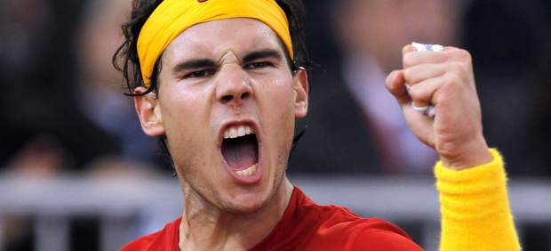
España no contará finalmente con Rafa Nadal, número dos del mundo, para la eliminatoria de cuartos de final de la Copa Davis ante Austria, que se disputará del 6 al 8 de abril en el complejo de Marina d'Or (Castellón), pero sí con David Ferrer que retorna a la 'armada'.
Aunque parecía que, pese al anuncio inicial del balear de aparcar la Copa Davis esta campaña, sí formaría parte de la selección española para este enfrentamiento con los austriacos, no ha sido seleccionado por el capitán Alex Corretja, que, por el contrario, recupera al de Jávea, que no estuvo ante Kazajistán en Oviedo.
Así, el alicantino, cinco del mundo, sustituye respecto al primer cruce a Juan Carlos Ferrero, lesionado en la muñeca, y es la principal novedad de cara a batirse con los austriacos sobre la tierra batida del complejo vacacional castellonense. Ferrer formará los individuales junto al murciano Nicolás Almagro, mientras que la responsabilidad del doble volverá a recaer en el dúo Marcel Granollers-Marc López. Además, Albert Ramos acudirá de 'sparring'.
"Estoy muy satisfecho con la excelente disposición mostrada por todos los jugadores para esta eliminatoria ante Austria, y quiero agradecerles a su colaboración durante estos días", señaló Alex Corretja desde Miami, donde ha estado siguiendo las evoluciones de los tenistas españoles.
El exjugador sabe que "será una eliminatoria complicada porque Austria es un rival de alto nivel". "Pero todos los jugadores están ilusionados con sumar una nueva victoria", advirtió el catalán en declaraciones facilitadas por la RFET.
"Esperamos que con el apoyo de nuestro público, que siempre es fundamental para el equipo, podamos alcanzar unas nuevas semifinales en esta competición tan especial para nosotros", afirmó el capitán español.
La selección española, que tiene previsto iniciar sus entrenamientos en Marina d'Or el próximo domingo, se ha enfrentado a Austria, verdugo de Rusia, en cuatro ocasiones en la Copa Davis, con un balance de tres victorias a una para los austriacos.
No se ven las caras desde 1995, cuando los centroeuropeos vencieron claramente por 4-1, en un equipo liderado por Thomas Muster, también clave en la victoria de 1990 en Barcelona (3-2). Los austriacos se llevaron el duelo igualmente en 1934 (5-0), mientras que España salió ganadora en 1979 (3-1).

2012-03-27T09:20:17Z
Acusan a Eddy Merckx en un caso de corrupción relacionado con la policía belga
Acusan a Eddy Merckx en un caso de corrupción relacionado con la policía belga
EFE
En el caso también está inculpado Philippe Boucar, comisario de Policía del distrito de Anderlecht (sur de Bruselas).
Éste habría favorecido a Merckx en la compra de la policía local de un pedido de 48 de bicicletas en el marco de una contratación pública.
El exciclista belga Eddy Merckx ha sido inculpado en un caso de corrupción relacionado con la policía local de Bruselas, que habría favorecido al quíntuple campeón del Tour en una subasta pública para la compra de un lote de bicicletas, según publica hoy la prensa belga. En el caso también está inculpado Philippe Boucar, comisario de Policía del distrito de Anderlecht (sur de Bruselas), quien habría favorecido a Merckx en la compra de la policía local de un pedido de 48 de bicicletas en el marco de una contratación pública, según el diario belga La Dernière Heure.Merckx, que desde su retirada del ciclismo profesional comercializa una marca de bicicletas con su propio nombre, se habría beneficiado presuntamente de esta licitación a cambio de dejar uno de estos vehículos a precio especial al comisario. Entre 2006 y 2007, Boucar informó a Merckx de la apertura de una subasta pública antes de que esta se anunciara oficialmente y posteriormente le comunicó los precios ofertados por otras compañías, según el citado medio. Las bicicletas estaban destinadas a equipar la brigada ciclista de la policía de Anderlecht y fueron pagadas con fondos provenientes de las recaudaciones por multas de tráfico. La Dernière Heure afirma que el Tribunal de Bruselas decidió retrasar la inculpación de Merckx, prevista inicialmente para el pasado 11 de diciembre, para permitirle acudir el pasado 15 de diciembre a París a la entrega de la condecoración de la Legión de Honor por parte del presidente francés, Nicolas Sarkozy. El Tribunal de Bruselas no ha confirmado esta circunstancia y por el momento ha rechazado hacer otros comentarios sobre el caso.
EFE
- En el caso también está inculpado Philippe Boucar, comisario de Policía del distrito de Anderlecht (sur de Bruselas).
- Éste habría favorecido a Merckx en la compra de la policía local de un pedido de 48 de bicicletas en el marco de una contratación pública.
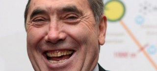
El exciclista belga Eddy Merckx ha sido inculpado en un caso de corrupción relacionado con la policía local de Bruselas, que habría favorecido al quíntuple campeón del Tour en una subasta pública para la compra de un lote de bicicletas, según publica hoy la prensa belga.
En el caso también está inculpado Philippe Boucar, comisario de Policía del distrito de Anderlecht (sur de Bruselas), quien habría favorecido a Merckx en la compra de la policía local de un pedido de 48 de bicicletas en el marco de una contratación pública, según el diario belga La Dernière Heure.
Merckx, que desde su retirada del ciclismo profesional comercializa una marca de bicicletas con su propio nombre, se habría beneficiado presuntamente de esta licitación a cambio de dejar uno de estos vehículos a precio especial al comisario.
Entre 2006 y 2007, Boucar informó a Merckx de la apertura de una subasta pública antes de que esta se anunciara oficialmente y posteriormente le comunicó los precios ofertados por otras compañías, según el citado medio.
Las bicicletas estaban destinadas a equipar la brigada ciclista de la policía de Anderlecht y fueron pagadas con fondos provenientes de las recaudaciones por multas de tráfico.
La Dernière Heure afirma que el Tribunal de Bruselas decidió retrasar la inculpación de Merckx, prevista inicialmente para el pasado 11 de diciembre, para permitirle acudir el pasado 15 de diciembre a París a la entrega de la condecoración de la Legión de Honor por parte del presidente francés, Nicolas Sarkozy.
El Tribunal de Bruselas no ha confirmado esta circunstancia y por el momento ha rechazado hacer otros comentarios sobre el caso.
2012-03-27T06:19:37Z
El Real Madrid quiere ponerse a 200 en Europa a costa del Apoel
El Real Madrid quiere ponerse a 200 en Europa a costa del Apoel
AGENCIAS
Los blancos llevan 199 victorias en competición europea.
Este martes se miden en los cuartos de Champions al débil Apoel.
Sigue el partido, en directo, desde las 20.45 horas.
El Real Madrid quiere este martes (20.45 horas) dar el primer paso hacia las semifinales de la Liga de Campeones y terminar de despejar las dudas que ha generado su juego en las jornadas precedentes ante un Apoel que ansía mantener su sueño europeo y dar un susto a los blancos.En el momento del sorteo el Real Madrid marchaba líder sólido de la Liga BBVA con diez puntos de ventaja y el emparejamiento ante el APOEL se vivió, aunque siempre con la educada cautela, con satisfacción, al tratarse del equipo con menos experiencia en el bombo, además de ser el primer chipriota en alcanzar esta ronda en la competición europea.Pero, dos días después, el Real Madrid vio como el Málaga quebraba su racha de once victorias ligueras consecutivas (1-1) y, en el encuentro siguiente, el Villarreal (1-1), repetía el guión, en ambos casos empatando el encuentro de falta directa. El partido en Castellón, además de la derrota, acarreó una serie de expulsiones y un disgusto en el seno del club que ha implantado la 'Ley del Silencio', quebrada por imperativo de UEFALa distancia con respecto al FC Barcelona se redujo a seis puntos y la irregularidad que se había venido adelantando con algunos resultados anteriores, sobre todo a domicilio, se confirmó con la pérdida de puntos. Sin embargo, la victoria del pasado sábado ante la Real Sociedad puede haber sido el bálsamo perfecto con el que afrontar la visita al Apoel, manteniendo la buena cara en la competición europea, si bien es cierto que en su última visita también cosechó un empate (1-1), igualmente en los últimos instantes del encuentro.Antes de ese partido, el Real Madrid, que después goleó sin demasiado brillo por 4-1 al CSKA para certificar su pase a cuartos, había protagonizado una fase de grupos prácticamente inmaculada, con pleno de victorias, y a eso quiere volver a aferrarse, para lo que deberá doblegar a un conjunto chipriota que sabe que tiene todo a ganar y cederá toda la presión a su rival.Un Apoel, que ha ganado cinco de sus siete partidos en casa en la 'Champions League' de esta temporada, comenzando desde la segunda ronda de clasificación y ratificando su histórica clasificación ante un Olympique Lyon que años atrás fue la 'bestia negra' de los blancos.Así, tras dejar en la cuneta al Skënderbeu, el Slovan Bratislava y el Wisla de Cracovia, protagonizó una excelente fase de grupos, en la que acabó primero, por delante de rivales de mayor entidad y experiencia como Zenit, Oporto y Shakhtar Donetsk. Además, lo hizo permitiéndose el lujo de llegar a la última jornada con el pase asegurado y fue en ese partido en el que encajó (0-2 ante el equipo ucraniano) la única derrota de la temporada en su feudo.Y es que en el GSP Stadium suma sus otros seis partidos con cinco victorias y un empate sin goles contra el Slovan y fue ahí donde certificó el pase a cuartos doblegando en la tanda de penaltis al Olympique, después de que ambos encuentros hubieran acabado con victoria local 1-0.A por los 200La visita del Real Madrid a Chipre tiene una motivación estadística añadida, ya que el club blanco se encuentra a una sola victoria de alcanzar los doscientos triunfos en competición europea.La primera victoria del Real Madrid llegó en su estreno en la Copa de Europa, el 8 de septiembre de 1955, ante el conjunto suizo del Servette (0-2) y la última se produjo hace tan solo dos semanas ante el CSKA Moscú (4-1).FICHA TÉCNICA--POSIBLES ALINEACIONES:APOEL: Chiotis; Poursaitides, Paulo Jorge, Oliveira, Boaventura; Charalambides, Pinto, Morais, Solari, Trickovski y Ailton.REAL MADRID: Casillas; Arbeloa, Pepe, Sergio Ramos, Marcelo; Khedira, Granero o Coentrao; Ozil, Kaka, Cristiano Ronaldo y Benzema.--ÁRBITRO: Felix Brych (ALE).--ESTADIO: GSP Stadium.--HORA: 20.45.
AGENCIAS
- Los blancos llevan 199 victorias en competición europea.
- Este martes se miden en los cuartos de Champions al débil Apoel.
- Sigue el partido, en directo, desde las 20.45 horas.
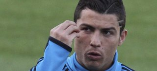
El Real Madrid quiere este martes (20.45 horas) dar el primer paso hacia las semifinales de la Liga de Campeones y terminar de despejar las dudas que ha generado su juego en las jornadas precedentes ante un Apoel que ansía mantener su sueño europeo y dar un susto a los blancos.
En el momento del sorteo el Real Madrid marchaba líder sólido de la Liga BBVA con diez puntos de ventaja y el emparejamiento ante el APOEL se vivió, aunque siempre con la educada cautela, con satisfacción, al tratarse del equipo con menos experiencia en el bombo, además de ser el primer chipriota en alcanzar esta ronda en la competición europea.
Pero, dos días después, el Real Madrid vio como el Málaga quebraba su racha de once victorias ligueras consecutivas (1-1) y, en el encuentro siguiente, el Villarreal (1-1), repetía el guión, en ambos casos empatando el encuentro de falta directa. El partido en Castellón, además de la derrota, acarreó una serie de expulsiones y un disgusto en el seno del club que ha implantado la 'Ley del Silencio', quebrada por imperativo de UEFA
La distancia con respecto al FC Barcelona se redujo a seis puntos y la irregularidad que se había venido adelantando con algunos resultados anteriores, sobre todo a domicilio, se confirmó con la pérdida de puntos. Sin embargo, la victoria del pasado sábado ante la Real Sociedad puede haber sido el bálsamo perfecto con el que afrontar la visita al Apoel, manteniendo la buena cara en la competición europea, si bien es cierto que en su última visita también cosechó un empate (1-1), igualmente en los últimos instantes del encuentro.
Antes de ese partido, el Real Madrid, que después goleó sin demasiado brillo por 4-1 al CSKA para certificar su pase a cuartos, había protagonizado una fase de grupos prácticamente inmaculada, con pleno de victorias, y a eso quiere volver a aferrarse, para lo que deberá doblegar a un conjunto chipriota que sabe que tiene todo a ganar y cederá toda la presión a su rival.
Un Apoel, que ha ganado cinco de sus siete partidos en casa en la 'Champions League' de esta temporada, comenzando desde la segunda ronda de clasificación y ratificando su histórica clasificación ante un Olympique Lyon que años atrás fue la 'bestia negra' de los blancos.
Así, tras dejar en la cuneta al Skënderbeu, el Slovan Bratislava y el Wisla de Cracovia, protagonizó una excelente fase de grupos, en la que acabó primero, por delante de rivales de mayor entidad y experiencia como Zenit, Oporto y Shakhtar Donetsk. Además, lo hizo permitiéndose el lujo de llegar a la última jornada con el pase asegurado y fue en ese partido en el que encajó (0-2 ante el equipo ucraniano) la única derrota de la temporada en su feudo.
Y es que en el GSP Stadium suma sus otros seis partidos con cinco victorias y un empate sin goles contra el Slovan y fue ahí donde certificó el pase a cuartos doblegando en la tanda de penaltis al Olympique, después de que ambos encuentros hubieran acabado con victoria local 1-0.
A por los 200
La visita del Real Madrid a Chipre tiene una motivación estadística añadida, ya que el club blanco se encuentra a una sola victoria de alcanzar los doscientos triunfos en competición europea.
La primera victoria del Real Madrid llegó en su estreno en la Copa de Europa, el 8 de septiembre de 1955, ante el conjunto suizo del Servette (0-2) y la última se produjo hace tan solo dos semanas ante el CSKA Moscú (4-1).
FICHA TÉCNICA
--POSIBLES ALINEACIONES:
APOEL: Chiotis; Poursaitides, Paulo Jorge, Oliveira, Boaventura; Charalambides, Pinto, Morais, Solari, Trickovski y Ailton.
REAL MADRID: Casillas; Arbeloa, Pepe, Sergio Ramos, Marcelo; Khedira, Granero o Coentrao; Ozil, Kaka, Cristiano Ronaldo y Benzema.
--ÁRBITRO: Felix Brych (ALE).
--ESTADIO: GSP Stadium.
--HORA: 20.45.
2012-03-27T05:44:20Z
Las piezas de la Liga siguen sin encajar a falta de 9 jornadas
Las piezas de la Liga siguen sin encajar a falta de 9 jornadas
F. P.
Ni Europa ni la lucha por el descenso están claras con 27 puntos en juego.
El 'efecto Simeone' se diluye en el Calderón.
La categoría de plata está también que arde.
Las veinte piezas que componen el puzle de Primera División siguen sin encajar. A falta de nueve jornadas para la conclusión (27 puntos en juego) de la competición doméstica, no hay nada decidido ni en la zona noble, ni por abajo ni en la zona media. A excepción de Real Madrid y Barcelona, que se disputarán el título entre ellos porque, entre otras consideraciones, tienen al tercero en discordia, el Valencia, a 28 y 22 puntos, respectivamente, el resto de equipos pelearán hasta la última jornada (12 y 13 de mayo) por alcanzar los objetivos marcados.El dato más revelador de la igualdad existente en la Liga es que hay diez equipos en zona de nadie del séptimo al decimoséptimo separados por solo nueve puntos que pueden aspirar tanto a entrar en puestos europeos, si encadenasen una buena racha, como a la lucha por el descenso, si sufren dos tropiezos consecutivos.ChampionsCuatro equipos en una horquilla de cuatro puntos. En una horquilla de cuatro puntos se mueven ahora los cuatro conjuntos mejor colocados para aspirar a disputar la máxima competición continental la próxima temporada. El Valencia (47 puntos) parecía que se había adueñado de una plaza, pero dos tropiezos seguidos, ante Zaragoza (1-2) y Getafe (3-1), permitieron que el Málaga ya se haya situado cuarto en la clasificación con los mismos puntos. Levante (44) y Osasuna (43), las dos grandes revelaciones de la temporada, están a la expectativa por si suena la flauta. También podría engancharse a última hora el Espanyol, que ya ha estado esta temporada en la zona noble, pero que se colocó a siete tras caer (1-2) ante el Málaga después de llegar a ponerse a dos hace apenas una semana.Liga EuropaLevante y Osasuna tienen siete perseguidores. Hasta nueve equipos intentarán encaramarse a las dos plazas de la Liga Europa. Ocho puntos separan al Levante, quinto, del Mallorca (36), decimotercero. En ese abanico de equipos, el Espan-yol (40) es el mejor colocado para desbancar bien al Levante bien a Osasuna, que ahora ocupan las dos posiciones europeas. Por detrás, Atlético (39), Getafe (39), Sevilla (39), Athletic (38), Rayo (37) y Mallorca (36) también estarán atentos a cualquier desliz de navarros y valencianos.DescensoLos tres últimos, empatados. La lucha por el descenso está que arde con siete equipos amenazados con bajar a Segunda. Racing, Sporting y Zaragoza, los tres últimos, empatados a 25 puntos, son los que peor lo tienen. Seis puntos separan del descenso a Granada (31) y Villarreal (31), que no pueden descuidarse. Tampoco Betis (32) y Real Sociedad (33) tienen nada hecho.El 'efecto Simeone' se diluye en el CalderónHa sumado los mismos puntos que Manzano. Diego Pablo Simeone, símbolo como jugador del doblete rojiblanco (1996), llegó hace apenas tres meses para revitalizar la trayectoria de un Atlético de Madrid a la deriva en manos de Gregorio Manzano. El Cholo consiguió en poco tiempo cambiar la actitud del equipo, que dio un giro radical a su comportamiento sobre el terreno de juego y sumó diez puntos en los primeros cuatro partidos con el preparador argentino.Sin embargo, en los últimos tiempos, el efecto Simeone parece que se está diluyendo. El Atlético ha sumado solo trece puntos en los últimos diez partidos (toda la segunda vuelta), calcando los números de Manzano en los diez primeros choques de la primera vuelta. De esta forma, la entidad rojiblanca se ha alejado de los puestos europeos, ya que se encuentra en la octava posición de la Liga, a cuatro de la Liga Europa y a ocho de la Champions.La categoría de plata está que ardeEn Segunda División también está apretada la lucha por el ascenso. Hasta diez equipos pelean por el objetivo a falta de doce jornadas en la división de plata.Deportivo y Celta. Con 66 y 59 puntos, respectivamente, ocupan las dos plazas de ascenso directo.Al acecho: Valladolid (55), Almería (51), Hércules (51) y Córdoba (50) esperan algún tropiezo gallego. Están en puestos de play-offs, aunque solo uno podrá ascender.A la expectativa: Elche (47), Alcorcón (47), Las Palmas (44) y Numancia (43) aún tienen opciones de buscar los play-offs.
F. P.
- Ni Europa ni la lucha por el descenso están claras con 27 puntos en juego.
- El 'efecto Simeone' se diluye en el Calderón.
- La categoría de plata está también que arde.
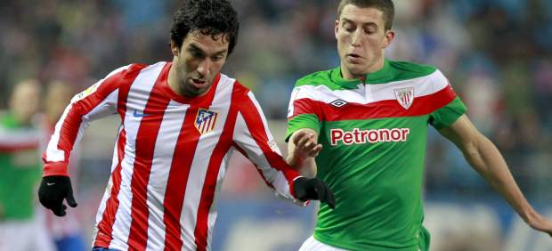
Las veinte piezas que componen el puzle de Primera División siguen sin encajar. A falta de nueve jornadas para la conclusión (27 puntos en juego) de la competición doméstica, no hay nada decidido ni en la zona noble, ni por abajo ni en la zona media. A excepción de Real Madrid y Barcelona, que se disputarán el título entre ellos porque, entre otras consideraciones, tienen al tercero en discordia, el Valencia, a 28 y 22 puntos, respectivamente, el resto de equipos pelearán hasta la última jornada (12 y 13 de mayo) por alcanzar los objetivos marcados.
El dato más revelador de la igualdad existente en la Liga es que hay diez equipos en zona de nadie del séptimo al decimoséptimo separados por solo nueve puntos que pueden aspirar tanto a entrar en puestos europeos, si encadenasen una buena racha, como a la lucha por el descenso, si sufren dos tropiezos consecutivos.
Champions
Cuatro equipos en una horquilla de cuatro puntos. En una horquilla de cuatro puntos se mueven ahora los cuatro conjuntos mejor colocados para aspirar a disputar la máxima competición continental la próxima temporada. El Valencia (47 puntos) parecía que se había adueñado de una plaza, pero dos tropiezos seguidos, ante Zaragoza (1-2) y Getafe (3-1), permitieron que el Málaga ya se haya situado cuarto en la clasificación con los mismos puntos. Levante (44) y Osasuna (43), las dos grandes revelaciones de la temporada, están a la expectativa por si suena la flauta. También podría engancharse a última hora el Espanyol, que ya ha estado esta temporada en la zona noble, pero que se colocó a siete tras caer (1-2) ante el Málaga después de llegar a ponerse a dos hace apenas una semana.
Liga Europa
Levante y Osasuna tienen siete perseguidores. Hasta nueve equipos intentarán encaramarse a las dos plazas de la Liga Europa. Ocho puntos separan al Levante, quinto, del Mallorca (36), decimotercero. En ese abanico de equipos, el Espan-yol (40) es el mejor colocado para desbancar bien al Levante bien a Osasuna, que ahora ocupan las dos posiciones europeas. Por detrás, Atlético (39), Getafe (39), Sevilla (39), Athletic (38), Rayo (37) y Mallorca (36) también estarán atentos a cualquier desliz de navarros y valencianos.
Descenso
Los tres últimos, empatados. La lucha por el descenso está que arde con siete equipos amenazados con bajar a Segunda. Racing, Sporting y Zaragoza, los tres últimos, empatados a 25 puntos, son los que peor lo tienen. Seis puntos separan del descenso a Granada (31) y Villarreal (31), que no pueden descuidarse. Tampoco Betis (32) y Real Sociedad (33) tienen nada hecho.
El 'efecto Simeone' se diluye en el Calderón
Ha sumado los mismos puntos que Manzano. Diego Pablo Simeone, símbolo como jugador del doblete rojiblanco (1996), llegó hace apenas tres meses para revitalizar la trayectoria de un Atlético de Madrid a la deriva en manos de Gregorio Manzano. El Cholo consiguió en poco tiempo cambiar la actitud del equipo, que dio un giro radical a su comportamiento sobre el terreno de juego y sumó diez puntos en los primeros cuatro partidos con el preparador argentino.
Sin embargo, en los últimos tiempos, el efecto Simeone parece que se está diluyendo. El Atlético ha sumado solo trece puntos en los últimos diez partidos (toda la segunda vuelta), calcando los números de Manzano en los diez primeros choques de la primera vuelta. De esta forma, la entidad rojiblanca se ha alejado de los puestos europeos, ya que se encuentra en la octava posición de la Liga, a cuatro de la Liga Europa y a ocho de la Champions.
La categoría de plata está que arde
En Segunda División también está apretada la lucha por el ascenso. Hasta diez equipos pelean por el objetivo a falta de doce jornadas en la división de plata.
Deportivo y Celta. Con 66 y 59 puntos, respectivamente, ocupan las dos plazas de ascenso directo.
Al acecho: Valladolid (55), Almería (51), Hércules (51) y Córdoba (50) esperan algún tropiezo gallego. Están en puestos de play-offs, aunque solo uno podrá ascender.
A la expectativa: Elche (47), Alcorcón (47), Las Palmas (44) y Numancia (43) aún tienen opciones de buscar los play-offs.
2012-03-26T21:40:27Z
Rooney hace al Manchester United más líder de la Premier
Rooney hace al Manchester United más líder de la Premier
EFE
Un gol del delantero inglés dio la victoria a los 'red devils' ante el Fulham.
Tras el pinchazo del City este sábado, el United refuerza su liderato (1-0).
Estadísticas del partido | Clasificación de la Premier League.
Un gol de Wayne Rooney, en el minuto 42, le dio el triunfo al Manchester United sobre el Fulham y el liderato de la Premier League tras la trigésima jornada.El equipo de Alex Ferguson no jugó bien ante un rival menor, que no ha marcado un gol en Old Trafford en más de seis años, y que incluso reclamó un penalti, en el minuto 89, por una caída en el área de Danny Murphy, tras un leve empujón de Michael Carrick.Con esta victoria, el Manchester United aventaja en tres puntos al City y recupera el primer puesto de la clasificación de la Premier.El Manchester City no pasó del empate en el partido de este sábado ante el Stoke City.
EFE
- Un gol del delantero inglés dio la victoria a los 'red devils' ante el Fulham.
- Tras el pinchazo del City este sábado, el United refuerza su liderato (1-0).
- Estadísticas del partido | Clasificación de la Premier League.
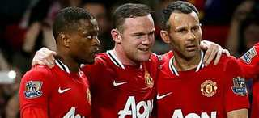
Un gol de Wayne Rooney, en el minuto 42, le dio el triunfo al Manchester United sobre el Fulham y el liderato de la Premier League tras la trigésima jornada.
El equipo de Alex Ferguson no jugó bien ante un rival menor, que no ha marcado un gol en Old Trafford en más de seis años, y que incluso reclamó un penalti, en el minuto 89, por una caída en el área de Danny Murphy, tras un leve empujón de Michael Carrick.
Con esta victoria, el Manchester United aventaja en tres puntos al City y recupera el primer puesto de la clasificación de la Premier.
El Manchester City no pasó del empate en el partido de este sábado ante el Stoke City.
2012-03-26T20:45:17Z
El Inter destituye a Ranieri
El Inter destituye a Ranieri
EFE
La eliminación en Champions y la derrota ante la Juve han causado su despido.
El Inter es octavo en el 'calcio' italiano a 22 puntos del líder de la Serie A, el Milan.
El entrenador del filial interista Andrea Stramaccioni se hace cargo del equipo.
El Inter de Milán ha anunciado este lunes la destitución de su entrenador, Claudio Ranieri, al día siguiente de la derrota por 2-0 ante la Juventus de Turín en la vigésima novena jornada del máximo campeonato italiano.Ranieri, cuyo equipo ocupa el octavo puesto en la clasificación de la Serie A a 22 puntos del líder, el Milán, será sustituido por Andrea Stramaccioni, técnico del Primavera, el equipo filial interista. A través de un comunicado, el club milanés señala que su "presidente, Massimo Moratti, y todo el Inter agradecen con sinceridad a Claudio Ranieri y a su equipo técnico su profesionalidad y empeño en estos meses al frente del equipo". El Inter, asimismo, anuncia que confía la dirección del equipo a Andrea Stramaccioni, que desde mañana se hará cargo de la primera plantilla interista en el entrenamiento en el centro deportivo 'Angelo Moratti'. Ranieri ha estado al frente del Inter poco menos de seis meses. El entrenador arrancó con el equipo interista con una racha de siete victorias consecutivas. Pero luego llegó la eliminación de la Liga de campeones a manos del Olympique de Marsella. La derrota del domingo ante la Juventus en Turín precipitó finalmente su destitución.
EFE
- La eliminación en Champions y la derrota ante la Juve han causado su despido.
- El Inter es octavo en el 'calcio' italiano a 22 puntos del líder de la Serie A, el Milan.
- El entrenador del filial interista Andrea Stramaccioni se hace cargo del equipo.
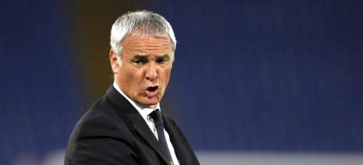
El Inter de Milán ha anunciado este lunes la destitución de su entrenador, Claudio Ranieri, al día siguiente de la derrota por 2-0 ante la Juventus de Turín en la vigésima novena jornada del máximo campeonato italiano.
Ranieri, cuyo equipo ocupa el octavo puesto en la clasificación de la Serie A a 22 puntos del líder, el Milán, será sustituido por Andrea Stramaccioni, técnico del Primavera, el equipo filial interista.
A través de un comunicado, el club milanés señala que su "presidente, Massimo Moratti, y todo el Inter agradecen con sinceridad a Claudio Ranieri y a su equipo técnico su profesionalidad y empeño en estos meses al frente del equipo".
El Inter, asimismo, anuncia que confía la dirección del equipo a Andrea Stramaccioni, que desde mañana se hará cargo de la primera plantilla interista en el entrenamiento en el centro deportivo 'Angelo Moratti'.
Ranieri ha estado al frente del Inter poco menos de seis meses. El entrenador arrancó con el equipo interista con una racha de siete victorias consecutivas.
Pero luego llegó la eliminación de la Liga de campeones a manos del Olympique de Marsella. La derrota del domingo ante la Juventus en Turín precipitó finalmente su destitución.
2012-03-26T19:15:31Z
Almagro elimina a Verdasco y alcanza los octavos en Miami
Almagro elimina a Verdasco y alcanza los octavos en Miami
EP
El tenista murciano se impuso con comodidad al madrileño por 6-3 y 6-4.
Segundo español tras Nadal en entrar en octavos del Masters 1.000 de Miami.
Albert Ramos cayó ante Richard Gasquet y se despide del torneo americano.
El tenista español Nicolás Almagro consiguió este lunes acceder a los octavos de final del torneo de Miami, tras derrotar al también español Fernando Verdasco (6-3, 6-4), mientras que Albert Ramos no pudo hacer lo propio y dijo adiós cediendo ante el francés Richard Gasquet (6-2, 5-7, 6-3).Almagro fue superior a un Verdasco que nunca se encontró a gusto sobre la pista de Miami. Ya en el sexto juego del primer set el murciano consiguió un 'break' que le ponía 4-2 y que propició el 6-3 final con el que se adjudicó la primera manga.El segundo parcial no supuso un cambio de aires para Verdasco, que perdió su saque en el tercer juego y volvió a jugar a remolque. Un 'break' que, al igual que en el primer set, volvió a ser definitivo y que utilizó Almagro para adjudicarse el partido por 6-4. El murciano accede así a los octavos de final de Miami donde se enfrentará al local Mardy Fish.Ramos, fueraAlbert Ramos se despidió del torneo estadounidense tras caer ante el francés Richard Gasquet, en un encuentro que tuvo que decidirse en el tercer set. No comenzó de la mejor manera posible el tenista catalán que, tras ceder el primer set por 6-2, tuvo que remontar en el segundo. Una segunda manda que decidió un 'break' conseguido por Ramos cuando el encuentro iba 5-5. Con su saque no falló y con el 7-5 mandó el encuentro al tercer set.Sin embargo, de nuevo un mal comienzo lastró al español, ya que perdió su primer saque y propició que Gasquet se pusiera 3-0. Ese 'break' fue decisivo y por 6-3 el francés se adjudicó el encuentro, accediendo así a octavos de final, donde se verá las caras con el vencedor del Djokovic-Troicki.
EP
- El tenista murciano se impuso con comodidad al madrileño por 6-3 y 6-4.
- Segundo español tras Nadal en entrar en octavos del Masters 1.000 de Miami.
- Albert Ramos cayó ante Richard Gasquet y se despide del torneo americano.
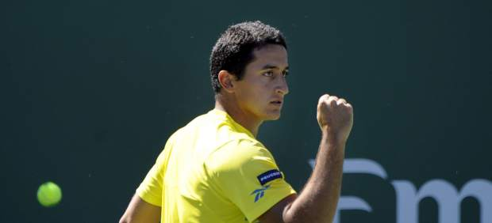
El tenista español Nicolás Almagro consiguió este lunes acceder a los octavos de final del torneo de Miami, tras derrotar al también español Fernando Verdasco (6-3, 6-4), mientras que Albert Ramos no pudo hacer lo propio y dijo adiós cediendo ante el francés Richard Gasquet (6-2, 5-7, 6-3).
Almagro fue superior a un Verdasco que nunca se encontró a gusto sobre la pista de Miami. Ya en el sexto juego del primer set el murciano consiguió un 'break' que le ponía 4-2 y que propició el 6-3 final con el que se adjudicó la primera manga.
El segundo parcial no supuso un cambio de aires para Verdasco, que perdió su saque en el tercer juego y volvió a jugar a remolque. Un 'break' que, al igual que en el primer set, volvió a ser definitivo y que utilizó Almagro para adjudicarse el partido por 6-4. El murciano accede así a los octavos de final de Miami donde se enfrentará al local Mardy Fish.
Ramos, fuera
Albert Ramos se despidió del torneo estadounidense tras caer ante el francés Richard Gasquet, en un encuentro que tuvo que decidirse en el tercer set. No comenzó de la mejor manera posible el tenista catalán que, tras ceder el primer set por 6-2, tuvo que remontar en el segundo. Una segunda manda que decidió un 'break' conseguido por Ramos cuando el encuentro iba 5-5. Con su saque no falló y con el 7-5 mandó el encuentro al tercer set.
Sin embargo, de nuevo un mal comienzo lastró al español, ya que perdió su primer saque y propició que Gasquet se pusiera 3-0. Ese 'break' fue decisivo y por 6-3 el francés se adjudicó el encuentro, accediendo así a octavos de final, donde se verá las caras con el vencedor del Djokovic-Troicki.
2012-03-26T16:32:29Z
Valdés: "Es un buen momento para medirse al Milan, pero siempre son peligrosos"
Valdés: "Es un buen momento para medirse al Milan, pero siempre son peligrosos"
EP
El portero del Barça sabe que los milanistas llegan al partido con muchas bajas.
Avisa de los peligros del equipo italiano antes de la eliminatoria de Champions.
Los culés visitan San Siro en la ida de cuartos este miércoles a las 20.45 horas.
El portero del FC Barcelona Víctor Valdés ha asegurado este lunes que el AC Milan "siempre es peligroso" pese a que llegan a la ida de los cuartos de final de Liga de Campeones con muchas bajas, y ha destacado el hecho de que el haberse visto ya en fase de grupos esta temporada lo hace más complicado."Es un buen momento (para medirse con los milanistas), pero siempre es un equipo peligroso, lo vimos en la fase de grupos y está en un buen momento. Tienen bajas, pero es una entidad histórica a nivel europeo y tendrá jugadores importantes más allá de las bajas", manifestó en rueda de prensa.Para Valdés, habrá que estar pendientes de las jugadas a balón parado y de las contras. "A balón parado son muy peligrosos, aunque tenga la baja de Thiago Silva siempre tienen jugadores que van bien de cabeza y a la contra sale muy bien, habrá que estar atentos", señaló.Y es que en fase de grupos el Barça salió más bien parado que los 'rossoneri', que ahora están en mejor nivel. "Puede llegar a ser más complicado cuando te has enfrentado en fase de grupos, nos pasó el año del Inter de Milán. En fútbol a veces las historias cambian y esperamos que la eliminatoria vaya a nuestro favor. El Milan, pese a las bajas, es un gran equipo y con jugadores que en estos momentos están muy enchufados", aseveró."Es una eliminatoria contra el Milan, uno de los grandes de Europa y va a ser muy complicada. En su campo, ante su afición que apretará mucho, será muy duro, tendremos que hacer nuestro juego que es vital de cara a esta eliminatoria", apostilló.
EP
- El portero del Barça sabe que los milanistas llegan al partido con muchas bajas.
- Avisa de los peligros del equipo italiano antes de la eliminatoria de Champions.
- Los culés visitan San Siro en la ida de cuartos este miércoles a las 20.45 horas.
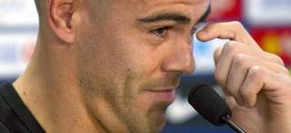
El portero del FC Barcelona Víctor Valdés ha asegurado este lunes que el AC Milan "siempre es peligroso" pese a que llegan a la ida de los cuartos de final de Liga de Campeones con muchas bajas, y ha destacado el hecho de que el haberse visto ya en fase de grupos esta temporada lo hace más complicado.
"Es un buen momento (para medirse con los milanistas), pero siempre es un equipo peligroso, lo vimos en la fase de grupos y está en un buen momento. Tienen bajas, pero es una entidad histórica a nivel europeo y tendrá jugadores importantes más allá de las bajas", manifestó en rueda de prensa.
Para Valdés, habrá que estar pendientes de las jugadas a balón parado y de las contras. "A balón parado son muy peligrosos, aunque tenga la baja de Thiago Silva siempre tienen jugadores que van bien de cabeza y a la contra sale muy bien, habrá que estar atentos", señaló.
Y es que en fase de grupos el Barça salió más bien parado que los 'rossoneri', que ahora están en mejor nivel. "Puede llegar a ser más complicado cuando te has enfrentado en fase de grupos, nos pasó el año del Inter de Milán. En fútbol a veces las historias cambian y esperamos que la eliminatoria vaya a nuestro favor. El Milan, pese a las bajas, es un gran equipo y con jugadores que en estos momentos están muy enchufados", aseveró.
"Es una eliminatoria contra el Milan, uno de los grandes de Europa y va a ser muy complicada. En su campo, ante su afición que apretará mucho, será muy duro, tendremos que hacer nuestro juego que es vital de cara a esta eliminatoria", apostilló.
2012-03-26T15:43:36Z
La final de la Copa será a las 22.00 horas y el Athletic actuará como local por antigüedad
La final de la Copa será a las 22.00 horas y el Athletic actuará como local por antigüedad
EFE
El partido entre Athletic y Barça será el 25 de mayo en el Vicente Calderón.
Cada club tendrá 20.000 entradas cuyos precios oscilarán entre 60 y 250 euros.
El criterio de reparto de las localidades entre los socios los decide cada equipo.
La Federación Española de Fútbol (RFEF) confirmó que la final de la Copa del Rey, el 25 de mayo en el Vicente Calderón, empezará a las 22.00 horas y que el Athletic Club actuará como local, "por criterio de antigüedad", y el FC Barcelona como visitante.El precio de las entradas variará entre 60 y 250 euros, y, sobre un aforo de unas 50.000 localidades, cada club finalista se quedará con 20.000.El resto quedará a disposición de la RFEF, que indicó que como en años anteriores no se pondrán entradas a la venta y que los clubes serán los que definan el criterio para su reparto entre sus socios.Ambos equipos harán un entrenamiento oficial en el Vicente Calderón en la víspera de la final, que estará precedida de actuaciones musicales desde que se abran las puertas del estadio del Atlético de Madrid.En la reunión celebrada este lunes en la Ciudad del Fútbol, el Athletic estuvo representado por Jon Berasategui, director general, Amaia Iturbe, relaciones públicas, y Iosune Vegas, jefa de prensa, y el Barcelona por Antoni Rossich, director general, Emilio Sabadell, director de operaciones, y Xavier Boixeda, jefe de taquillaje.En nombre de la RFEF asistieron Jorge Pérez, secretario general, Antonio Suárez, presidente de la Comisión de Eventos, Esther Gascón, directora de Relaciones Externas, y Miguel Ángel López, coordinador de partidos.
EFE
- El partido entre Athletic y Barça será el 25 de mayo en el Vicente Calderón.
- Cada club tendrá 20.000 entradas cuyos precios oscilarán entre 60 y 250 euros.
- El criterio de reparto de las localidades entre los socios los decide cada equipo.
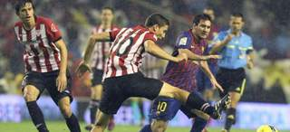
La Federación Española de Fútbol (RFEF) confirmó que la final de la Copa del Rey, el 25 de mayo en el Vicente Calderón, empezará a las 22.00 horas y que el Athletic Club actuará como local, "por criterio de antigüedad", y el FC Barcelona como visitante.
El precio de las entradas variará entre 60 y 250 euros, y, sobre un aforo de unas 50.000 localidades, cada club finalista se quedará con 20.000.
El resto quedará a disposición de la RFEF, que indicó que como en años anteriores no se pondrán entradas a la venta y que los clubes serán los que definan el criterio para su reparto entre sus socios.
Ambos equipos harán un entrenamiento oficial en el Vicente Calderón en la víspera de la final, que estará precedida de actuaciones musicales desde que se abran las puertas del estadio del Atlético de Madrid.
En la reunión celebrada este lunes en la Ciudad del Fútbol, el Athletic estuvo representado por Jon Berasategui, director general, Amaia Iturbe, relaciones públicas, y Iosune Vegas, jefa de prensa, y el Barcelona por Antoni Rossich, director general, Emilio Sabadell, director de operaciones, y Xavier Boixeda, jefe de taquillaje.
En nombre de la RFEF asistieron Jorge Pérez, secretario general, Antonio Suárez, presidente de la Comisión de Eventos, Esther Gascón, directora de Relaciones Externas, y Miguel Ángel López, coordinador de partidos.
2012-03-26T10:34:16Z
Pedrosa, sobre tener a Márquez en el mismo equipo: "Sería lo nunca visto, un dream team"
Pedrosa, sobre tener a Márquez en el mismo equipo: "Sería lo nunca visto, un dream team"
EFE
"Por mi parte incluso sería muy bueno pues me motivaría aún más a la hora de esforzarme", dice el piloto catalán.
"Yo no pondría nunca en duda a Valentino, lleva muchos años ganando y es difícil estar siempre en lo más arriba y seguir empujando, pero Rossi es Rossi".
La hipotética situación de ver a los pilotos Dani Pedrosa y Marc Márquez juntos en el mismo equipo en el mundial de MotoGP fue calificada por el primero de ellos como "lo nunca visto, sería una especie de 'dream team'". "La verdad es que tener un equipo en el que estuviésemos Marc y yo juntos sería algo nunca visto y la verdad por mi parte incluso sería muy bueno pues me motivaría aún más a la hora de esforzarme", aseguró al ser preguntado al respecto Dani Pedrosa, quien junto a Marc Márquez, Maverick Viñales y la joven María Herrera participó en un desayuno de trabajo organizado por Europa Press en Madrid.A lo largo del acto Dani Pedrosa reconoció que todavía no se ha retirado de la competición, si bien admitió que en ocasiones ha pensado en ello pero afirmó no tener "ninguna respuesta para saber qué es lo que haré cuando me retire y si no ha venido todavía esa respuesta debe ser que no toca pensar en ello. Por el momento no hay nada que me apasione más que correr en moto y sólo espero que cuando llegue la respuesta sepa reconocer el momento", aseguró el piloto de la escudería Repsol de MotoGP. En algún momento de su intervención Dani Pedrosa también fue interpelado por la situación de Valentino Rossi, sexto en los últimos entrenamientos de Jerez, y aseguró al respecto que "yo no pondría nunca en duda a Valentino, lleva muchos años ganando y es difícil estar siempre en lo más arriba y seguir empujando igual, pero Rossi es Rossi", dijo. También valoró como positivo el cambio en MotoGP a motos de 1.000 c.c. pues es una moto "mucho más divertida", si bien reconoció Pedrosa que en lo que a él se refiere "todavía no me siento cómodo con algunos aspectos de la moto".Márquez, recuperadoJunto a él estuvo Marc Márquez, campeón del mundo de 125 c.c. en 2010 y subcampeón del mundo de Moto2 en 2011, quien en Jerez protagonizó sus primeros entrenamientos completos con el resto de pilotos tras la lesión ocular que sufrió en Malasia y de la cual dijo estar "ciento por ciento recuperado". Como a Pedrosa también se le preguntó por su paso, en un futuro, a MotoGP, y el piloto de Cervera dijo no tener prisa y que "el salto lo das cuando te ves preparado para ello, pero la verdad es que de momento no me lo planteo". El joven Maverick Viñales, quien reconoció que tanto Pedrosa como Rossi eran sus ídolos, tiene claros sus objetivos para la temporada, que no son otros que luchar por el título mundial de Moto3, motos que aseguró "son más fáciles de llevar que las 125 c.c. y tienen un paso por curva muchísimo mayor, por lo que no será complicado rodar más deprisa con ellas en muchos circuitos que con las antiguas 125 c.c.". Viñales reconoció que también se veía luchando por el título mundial de Moto3, con Cortese o Kent como algunos de sus rivales, sin dejar de citar a Héctor Faubel o Alberto Moncayo. En el caso de María Herrera, su juventud la hizo ser mucho más cauta y de la temporada que está a punto de comenzar aseguró que esperaba "aprender mucho y pasarlo lo mejor posible sobre la moto".
EFE
- "Por mi parte incluso sería muy bueno pues me motivaría aún más a la hora de esforzarme", dice el piloto catalán.
- "Yo no pondría nunca en duda a Valentino, lleva muchos años ganando y es difícil estar siempre en lo más arriba y seguir empujando, pero Rossi es Rossi".
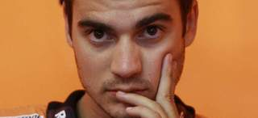
La hipotética situación de ver a los pilotos Dani Pedrosa y Marc Márquez juntos en el mismo equipo en el mundial de MotoGP fue calificada por el primero de ellos como "lo nunca visto, sería una especie de 'dream team'".
"La verdad es que tener un equipo en el que estuviésemos Marc y yo juntos sería algo nunca visto y la verdad por mi parte incluso sería muy bueno pues me motivaría aún más a la hora de esforzarme", aseguró al ser preguntado al respecto Dani Pedrosa, quien junto a Marc Márquez, Maverick Viñales y la joven María Herrera participó en un desayuno de trabajo organizado por Europa Press en Madrid.
A lo largo del acto Dani Pedrosa reconoció que todavía no se ha retirado de la competición, si bien admitió que en ocasiones ha pensado en ello pero afirmó no tener "ninguna respuesta para saber qué es lo que haré cuando me retire y si no ha venido todavía esa respuesta debe ser que no toca pensar en ello. Por el momento no hay nada que me apasione más que correr en moto y sólo espero que cuando llegue la respuesta sepa reconocer el momento", aseguró el piloto de la escudería Repsol de MotoGP.
En algún momento de su intervención Dani Pedrosa también fue interpelado por la situación de Valentino Rossi, sexto en los últimos entrenamientos de Jerez, y aseguró al respecto que "yo no pondría nunca en duda a Valentino, lleva muchos años ganando y es difícil estar siempre en lo más arriba y seguir empujando igual, pero Rossi es Rossi", dijo.
También valoró como positivo el cambio en MotoGP a motos de 1.000 c.c. pues es una moto "mucho más divertida", si bien reconoció Pedrosa que en lo que a él se refiere "todavía no me siento cómodo con algunos aspectos de la moto".
Márquez, recuperado
Junto a él estuvo Marc Márquez, campeón del mundo de 125 c.c. en 2010 y subcampeón del mundo de Moto2 en 2011, quien en Jerez protagonizó sus primeros entrenamientos completos con el resto de pilotos tras la lesión ocular que sufrió en Malasia y de la cual dijo estar "ciento por ciento recuperado".
Como a Pedrosa también se le preguntó por su paso, en un futuro, a MotoGP, y el piloto de Cervera dijo no tener prisa y que "el salto lo das cuando te ves preparado para ello, pero la verdad es que de momento no me lo planteo".
El joven Maverick Viñales, quien reconoció que tanto Pedrosa como Rossi eran sus ídolos, tiene claros sus objetivos para la temporada, que no son otros que luchar por el título mundial de Moto3, motos que aseguró "son más fáciles de llevar que las 125 c.c. y tienen un paso por curva muchísimo mayor, por lo que no será complicado rodar más deprisa con ellas en muchos circuitos que con las antiguas 125 c.c.".
Viñales reconoció que también se veía luchando por el título mundial de Moto3, con Cortese o Kent como algunos de sus rivales, sin dejar de citar a Héctor Faubel o Alberto Moncayo.
En el caso de María Herrera, su juventud la hizo ser mucho más cauta y de la temporada que está a punto de comenzar aseguró que esperaba "aprender mucho y pasarlo lo mejor posible sobre la moto".
2012-03-26T07:46:52Z
'Checo' Pérez, un piloto de futuro
'Checo' Pérez, un piloto de futuro
20MINUTOS.ES / EP
Con su carrera en Malasia pasa a ser el protagonista del día junto a Fernando Alonso, vencedor en el segundo Gran Premio de la temporada.
El mexicano quedó segundo y va quinto en el Mundial.
Dedicó su carrera a su perrita fallecida hace unos días.
Sergio 'Checo' Pérez (26 de enero de 1990) es la revelación en el inicio de la temporada de Fórmula.Su carrerón, con segundo puesto incluido, en Malasia le coloca como uno de los nombres de la jornada junto al de Fernando Alonso, vencedor de la segunda prueba del año.El mexicano, miembro de la 'Drivers Academy' de Ferrari, ha dado un paso muy importante para ser piloto de la escudería italiana algún día.Su segundo puesto supone una alegría enorme para México, que no veía a un piloto suyo en el podio desde 1971.El de Jalisco quiso dedicar el mejor resultado de su vida en el 'gran circo' a su perrita Frida, fallecida hace unos días. "Le dedico la carrera a Frida, mi perrita, que murió y a todos los que me apoyaron, a Carlos Slim, por todo lo que me ha ayudado, y en especial a Dios y a mi familia", apuntó.'Checo' Pérez, que disputa su segunda campaña mundialista, explicó cómo había perdido la opción de subir a lo más alto del cajón. "Estaba alcanzando a Fernando, sabía que debía acercarme lo antes posible porque se iban degradando los neumáticos, me he salido en una curva a izquierdas al tocar el bordillo, todo estaba mojado y ahí perdí la victoria. Ha sido difícil alcanzar a Fernando", comentó.El mexicano debutó en la Fórmula 1 la pasada temporada proveniente de la GP2, donde en 2010 consiguió el subcampeonato. En su primer año con Sauber acabó el Mundial decimosexto, con 14 puntos. Su mejor resultado fue un séptimo en Canadá.Este año ya lleva en sólo dos carreras más puntos (22) que en todo el año pasado y marcha quinto en la clasificación general de pilotos. La página oficial de la F1 califica a 'Checo' como "the man of the match"(el hombre del día).Inicios precocesPérez inició su carrera a la edad de 6 años en el karting en 1996. Habrá que dar un gran salto hasta llegar a 2004, uno de sus años más importantes en su carrera. Compitió en el Campeonato Midwestern y en el Nacional de la Fórmula Skip Barber, como piloto de la Escudería Telmex.En 2005 y 2006 participó con esa escudería en la Fórmula BMW de Alemania. Ya en 2007 disputa el Campeonato de la Fórmula 3 Británica en la Clase Nacional.La carrera de Pérez sigue ascendiendo, y en 2008 se une a Campos Grand Prix para la GP2 Asia Series, ganando 2 carreras y con 26 puntos.En 2009 ficha por Arden International y aluego vuelve a Campos (renombrado Barwa Addax) para su segunda GP2 Asia Series.
20MINUTOS.ES / EP
- Con su carrera en Malasia pasa a ser el protagonista del día junto a Fernando Alonso, vencedor en el segundo Gran Premio de la temporada.
- El mexicano quedó segundo y va quinto en el Mundial.
- Dedicó su carrera a su perrita fallecida hace unos días.
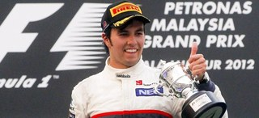
Sergio 'Checo' Pérez (26 de enero de 1990) es la revelación en el inicio de la temporada de Fórmula.
Su carrerón, con segundo puesto incluido, en Malasia le coloca como uno de los nombres de la jornada junto al de Fernando Alonso, vencedor de la segunda prueba del año.
El mexicano, miembro de la 'Drivers Academy' de Ferrari, ha dado un paso muy importante para ser piloto de la escudería italiana algún día.
Su segundo puesto supone una alegría enorme para México, que no veía a un piloto suyo en el podio desde 1971.
El de Jalisco quiso dedicar el mejor resultado de su vida en el 'gran circo' a su perrita Frida, fallecida hace unos días. "Le dedico la carrera a Frida, mi perrita, que murió y a todos los que me apoyaron, a Carlos Slim, por todo lo que me ha ayudado, y en especial a Dios y a mi familia", apuntó.
'Checo' Pérez, que disputa su segunda campaña mundialista, explicó cómo había perdido la opción de subir a lo más alto del cajón. "Estaba alcanzando a Fernando, sabía que debía acercarme lo antes posible porque se iban degradando los neumáticos, me he salido en una curva a izquierdas al tocar el bordillo, todo estaba mojado y ahí perdí la victoria. Ha sido difícil alcanzar a Fernando", comentó.
El mexicano debutó en la Fórmula 1 la pasada temporada proveniente de la GP2, donde en 2010 consiguió el subcampeonato. En su primer año con Sauber acabó el Mundial decimosexto, con 14 puntos. Su mejor resultado fue un séptimo en Canadá.
Este año ya lleva en sólo dos carreras más puntos (22) que en todo el año pasado y marcha quinto en la clasificación general de pilotos. La página oficial de la F1 califica a 'Checo' como "the man of the match"(el hombre del día).
Inicios precoces
Pérez inició su carrera a la edad de 6 años en el karting en 1996. Habrá que dar un gran salto hasta llegar a 2004, uno de sus años más importantes en su carrera. Compitió en el Campeonato Midwestern y en el Nacional de la Fórmula Skip Barber, como piloto de la Escudería Telmex.
En 2005 y 2006 participó con esa escudería en la Fórmula BMW de Alemania. Ya en 2007 disputa el Campeonato de la Fórmula 3 Británica en la Clase Nacional.
La carrera de Pérez sigue ascendiendo, y en 2008 se une a Campos Grand Prix para la GP2 Asia Series, ganando 2 carreras y con 26 puntos.
En 2009 ficha por Arden International y aluego vuelve a Campos (renombrado Barwa Addax) para su segunda GP2 Asia Series.
2012-03-26T07:37:55Z
Rendidos ante el 'Mago' Alonso
Rendidos ante el 'Mago' Alonso
EFE
La siempre crítica prensa italiana, a los pies del asturiano.
El piloto de Ferrari ganó en Malasia y lidera el Mundial.
La prensa italiana dedica hoy sus portadas a elogiar al español Fernando Alonso, piloto de Ferrari que se impuso este domingo bajo la lluvia en el Gran Premio de Malasia. Alonso y Ferrari vuelven hoy a ser los grandes protagonistas de los diarios italianos después de la gran carrera en el circuito de Sepang del español, a quien se refieren como "mago", "rey de la lluvia" o "el tigre de Malasia". El diario Gazzetta dello Sport abre con un "Mago Alonso" y afirma que el español fue "perfecto" en un carrera difícil, en la que tuvo que conducir bajo la lluvia y sin la telemetría y resistió con uñas y dientes a la presión del mexicano de Sauber, Sergio Pérez.El mismo calificativo elige el diario deportivo de Roma, Corriere dello Sport, para informar sobre la victoria del español "bajo el diluvio de Malasia": "Alonso eres un mago". "Como un huracán", añade el rotativo romano, que resalta cómo ante las difíciles condiciones meteorológicas surgió el "verdadero talento del piloto español, que hizo olvidar los defectos del vehículo". La foto de Alonso celebrando el triunfo, quien se colocó con esta victoria líder del campeonato Mundial, también aparece en la portada de los diarios generalistas como Corriere della Sera, que opina que la victoria fue una mezcla entre "un piloto fantástico y una estrategia perfecta". "Vuelve Alonso, el rey de la lluvia", destaca el diario La Repubblica, que señala como se volvió a ver al piloto de las pasadas temporadas: "veloz; preciso; calculador; apasionado al volante, pero frío en la ejecución y estrepitoso". Para La Stampa, la victoria en Malasia fue "un milagro" y celebra que la escudería Ferrari vuelva a ganar. "El hombre de los milagros". Así califica La Stampa a Alonso, en la que fue, según el rotativo, una de las victorias más bonitas para la escudería del caballito rampante.
EFE
- La siempre crítica prensa italiana, a los pies del asturiano.
- El piloto de Ferrari ganó en Malasia y lidera el Mundial.

La prensa italiana dedica hoy sus portadas a elogiar al español Fernando Alonso, piloto de Ferrari que se impuso este domingo bajo la lluvia en el Gran Premio de Malasia.
Alonso y Ferrari vuelven hoy a ser los grandes protagonistas de los diarios italianos después de la gran carrera en el circuito de Sepang del español, a quien se refieren como "mago", "rey de la lluvia" o "el tigre de Malasia".
El diario Gazzetta dello Sport abre con un "Mago Alonso" y afirma que el español fue "perfecto" en un carrera difícil, en la que tuvo que conducir bajo la lluvia y sin la telemetría y resistió con uñas y dientes a la presión del mexicano de Sauber, Sergio Pérez.
El mismo calificativo elige el diario deportivo de Roma, Corriere dello Sport, para informar sobre la victoria del español "bajo el diluvio de Malasia": "Alonso eres un mago".
"Como un huracán", añade el rotativo romano, que resalta cómo ante las difíciles condiciones meteorológicas surgió el "verdadero talento del piloto español, que hizo olvidar los defectos del vehículo".
La foto de Alonso celebrando el triunfo, quien se colocó con esta victoria líder del campeonato Mundial, también aparece en la portada de los diarios generalistas como Corriere della Sera, que opina que la victoria fue una mezcla entre "un piloto fantástico y una estrategia perfecta".
"Vuelve Alonso, el rey de la lluvia", destaca el diario La Repubblica, que señala como se volvió a ver al piloto de las pasadas temporadas: "veloz; preciso; calculador; apasionado al volante, pero frío en la ejecución y estrepitoso".
Para La Stampa, la victoria en Malasia fue "un milagro" y celebra que la escudería Ferrari vuelva a ganar.
"El hombre de los milagros". Así califica La Stampa a Alonso, en la que fue, según el rotativo, una de las victorias más bonitas para la escudería del caballito rampante.
2012-03-26T05:26:57Z
Nadal resuelve con rapidez el duelo con Stepanek y ya está en octavos del Masters de Miami
Nadal resuelve con rapidez el duelo con Stepanek y ya está en octavos del Masters de Miami
EFE
El español derrotó al checo por 6-2 y 6-2 en una hora y 26 minutos.
El número dos del mundo se medirá en octavos al japonés Kei Nishikori.
El español Rafael Nadal resolvió con rapidez y eficacia su duelo con el checo Radek Stepanek y logró su clasificación para los octavos de final del torneo de tenis de Miami, segundo Masters 1000 de la temporada. Nadal, segundo favorito del torneo, derrotó al jugador checo, vigésimo quinto, por 6-2 y 6-2 en una hora y 26 minutos de un partido dominado de principio a fin por el español.No tardó mucho Nadal en tomar las riendas del duelo. Rompió el servicio de su oponente en el sexto juego para colocarse con un 4-2 a su favor. Tras conservar su servicio, en el siguiente volvió a romper el de un ya desquiciado Stepane para adjudicarse el set. La segunda manga comenzó con los mismos tintes, con un Nadal muy seguro y con tenis de gran brillantez que terminó por descolocar a Stepanek, que tras una doble falta perdió su servicio para un 2-0 a favor del español. El jugador checo logró mantener el tipo en los siguientes, pero en el octavo, y a la postre último juego, Nadal volvió a imponer su ley para adjudicárselo con autoridad. El número dos del mundo se medirá en octavos al japonés Kei Nishikori, que en tercera ronda venció al checo Lukas Rosol por 6-4 y 6-2.
EFE
- El español derrotó al checo por 6-2 y 6-2 en una hora y 26 minutos.
- El número dos del mundo se medirá en octavos al japonés Kei Nishikori.
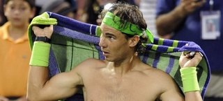
El español Rafael Nadal resolvió con rapidez y eficacia su duelo con el checo Radek Stepanek y logró su clasificación para los octavos de final del torneo de tenis de Miami, segundo Masters 1000 de la temporada.
Nadal, segundo favorito del torneo, derrotó al jugador checo, vigésimo quinto, por 6-2 y 6-2 en una hora y 26 minutos de un partido dominado de principio a fin por el español.
No tardó mucho Nadal en tomar las riendas del duelo. Rompió el servicio de su oponente en el sexto juego para colocarse con un 4-2 a su favor. Tras conservar su servicio, en el siguiente volvió a romper el de un ya desquiciado Stepane para adjudicarse el set.
La segunda manga comenzó con los mismos tintes, con un Nadal muy seguro y con tenis de gran brillantez que terminó por descolocar a Stepanek, que tras una doble falta perdió su servicio para un 2-0 a favor del español. El jugador checo logró mantener el tipo en los siguientes, pero en el octavo, y a la postre último juego, Nadal volvió a imponer su ley para adjudicárselo con autoridad.
El número dos del mundo se medirá en octavos al japonés Kei Nishikori, que en tercera ronda venció al checo Lukas Rosol por 6-4 y 6-2.
2012-03-27T09:54:22Z
Zubizarreta: "Tampoco está tan mal nuestra temporada"
Zubizarreta: "Tampoco está tan mal nuestra temporada"
EP
El director deportivo del Barça, feliz por seguir en las 3 competiciones.
"A todos los hijos se les quiere, y nosotros queremos todas las competiciones. No renunciaremos a unos porque nos hagan más ilusión otros".
Aunque reconoce que "la Champions es la que más ilusión levanta".
El director deportivo del FC Barcelona, Andoni Zubizarreta, ha asegurado este martes antes de partir hacia Milán, donde juegan el miércoles la ida de cuartos de final de Liga de Campeones ante el AC Milan, que la temporada de los blaugranas "tampoco está tan mal" a tenor de que todavía siguen vivos en las tres competiciones, sobre todo en una 'Champions' que "ilusiona". "En la Copa estamos evidentemente muy bien, en 'Champions' muy bien, en la Liga ha habido algún partido en que no hemos tenido ese mismo resultado, pero el equipo desde que empezó en Supercopa, a veces se nos olvida que tenemos la Supercopa europea y española en el mes de agosto, tampoco está tan mal la temporada", manifestó ante los medios.Para Zubizarreta, lo importante siempre es mirar hacia adelante con el objetivo de mejorar lo conseguido en el pasado, pero negó que haya habido momentos malos en lo que va de año. "Creo poco en el mejor o peor momento, si aceptamos que es lo mejor es que hubo algo peor, y estamos en una final de Copa, en cuartos en 'Champions' y segundos en Liga, así que el peor no sé dónde estuvo. Hasta ahora lo hemos llevado razonablemente bien", aseguró.Eso sí, no quiso hablar de posibles tripletes. "No solemos jugar con eso, sino con nuestro trabajo, con lo que hacemos, con el deseo de pasar esta eliminatoria de 'Champions'. Crear grandes expectativas para luego tener desilusiones es algo más prosaico", argumentó."A todos los hijos se les quiere, y nosotros queremos todas las competiciones. No renunciaremos a unos porque nos hagan más ilusión otros. Hay que mantener el nivel del equipo igual que en los últimos años", apuntó sobre si la Liga de Campeones, por ser la que más "ilusión" levanta, era la preferida.Ya en cuanto al Milan, aseguró que los precedentes en la fase de grupos servirán como ejemplo para superar una eliminatoria dura ante uno de los "grandes equipos" europeos. "Habernos visto y medido desde un punto de vista competitivo seguro que nos habrá enseñado algo a unos y otros", comentó."Igual que no miramos para adelante, tampoco para atrás. Nos centramos en ganar el siguiente partido y será lo que nos diga cómo estemos. Lo otro te acredita, te da puntos, no lo voy a negar, pero lo importante es sumar hacia adelante, esperamos mantener el nivel y si podemos mejorar mejor", indicó en cuanto al pasado y al hecho de ser los vigentes campeones de la competición.El Milan, complicadoEn cuanto a la baja de Thiago Silva aseguró que los 'rossoneri' tienen una gran plantilla para cubrir ausencias, y destacó la calidad del ex blaugrana Zlatan Ibrahimovic. "Es un gran jugador, de gran calidad, y en estos partidos los grandes jugadores siempre tienen un punto de motivación especial. Es un gran jugador que está en un gran equipo, el Milan tiene grandes jugadores. Esto siempre es un aliciente, una motivación, es una eliminatoria de cuartos de final", recordó."Ni firmo ni dejo de firmar el empate. Cuando acabe el partido veremos si es buen resultado o no, si hemos tenido suerte. Es muy difícil decir con qué te quedarías. Tenemos un estilo, nos gusta dominar el juego, el balón, atacar, y es lo que vamos a intentar hacer. No nos interesa un tipo de partido u otro, sino dominar el juego, pese a que el Milán, sin dominar el juego, puede hacernos mucho daño", destacó en cuanto al peligro de los de Allegri.
EP
- El director deportivo del Barça, feliz por seguir en las 3 competiciones.
- "A todos los hijos se les quiere, y nosotros queremos todas las competiciones. No renunciaremos a unos porque nos hagan más ilusión otros".
- Aunque reconoce que "la Champions es la que más ilusión levanta".
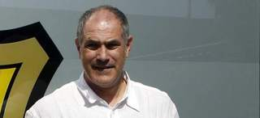
El director deportivo del FC Barcelona, Andoni Zubizarreta, ha asegurado este martes antes de partir hacia Milán, donde juegan el miércoles la ida de cuartos de final de Liga de Campeones ante el AC Milan, que la temporada de los blaugranas "tampoco está tan mal" a tenor de que todavía siguen vivos en las tres competiciones, sobre todo en una 'Champions' que "ilusiona".
"En la Copa estamos evidentemente muy bien, en 'Champions' muy bien, en la Liga ha habido algún partido en que no hemos tenido ese mismo resultado, pero el equipo desde que empezó en Supercopa, a veces se nos olvida que tenemos la Supercopa europea y española en el mes de agosto, tampoco está tan mal la temporada", manifestó ante los medios.
Para Zubizarreta, lo importante siempre es mirar hacia adelante con el objetivo de mejorar lo conseguido en el pasado, pero negó que haya habido momentos malos en lo que va de año. "Creo poco en el mejor o peor momento, si aceptamos que es lo mejor es que hubo algo peor, y estamos en una final de Copa, en cuartos en 'Champions' y segundos en Liga, así que el peor no sé dónde estuvo. Hasta ahora lo hemos llevado razonablemente bien", aseguró.
Eso sí, no quiso hablar de posibles tripletes. "No solemos jugar con eso, sino con nuestro trabajo, con lo que hacemos, con el deseo de pasar esta eliminatoria de 'Champions'. Crear grandes expectativas para luego tener desilusiones es algo más prosaico", argumentó.
"A todos los hijos se les quiere, y nosotros queremos todas las competiciones. No renunciaremos a unos porque nos hagan más ilusión otros. Hay que mantener el nivel del equipo igual que en los últimos años", apuntó sobre si la Liga de Campeones, por ser la que más "ilusión" levanta, era la preferida.
Ya en cuanto al Milan, aseguró que los precedentes en la fase de grupos servirán como ejemplo para superar una eliminatoria dura ante uno de los "grandes equipos" europeos. "Habernos visto y medido desde un punto de vista competitivo seguro que nos habrá enseñado algo a unos y otros", comentó.
"Igual que no miramos para adelante, tampoco para atrás. Nos centramos en ganar el siguiente partido y será lo que nos diga cómo estemos. Lo otro te acredita, te da puntos, no lo voy a negar, pero lo importante es sumar hacia adelante, esperamos mantener el nivel y si podemos mejorar mejor", indicó en cuanto al pasado y al hecho de ser los vigentes campeones de la competición.
El Milan, complicado
En cuanto a la baja de Thiago Silva aseguró que los 'rossoneri' tienen una gran plantilla para cubrir ausencias, y destacó la calidad del ex blaugrana Zlatan Ibrahimovic. "Es un gran jugador, de gran calidad, y en estos partidos los grandes jugadores siempre tienen un punto de motivación especial. Es un gran jugador que está en un gran equipo, el Milan tiene grandes jugadores. Esto siempre es un aliciente, una motivación, es una eliminatoria de cuartos de final", recordó.
"Ni firmo ni dejo de firmar el empate. Cuando acabe el partido veremos si es buen resultado o no, si hemos tenido suerte. Es muy difícil decir con qué te quedarías. Tenemos un estilo, nos gusta dominar el juego, el balón, atacar, y es lo que vamos a intentar hacer. No nos interesa un tipo de partido u otro, sino dominar el juego, pese a que el Milán, sin dominar el juego, puede hacernos mucho daño", destacó en cuanto al peligro de los de Allegri.
2012-03-27T08:26:51Z
Piqué vuelve a apuntar como hombre clave en la defensa
Piqué vuelve a apuntar como hombre clave en la defensa
20MINUTOS.ES
Todo hace indicar que el central jugará en el eje de la zaga ante el Milan.
Ha atravesado por sus peores momentos en el Barça, pero su gol en Mallorca y sus últimos partidos, más centrado, indican que vuelve a ser importante.
Gerard Piqué vuelve a sentirse importante el el FC Barcelona.El central marcó un importantísimo gol ante el Mallorca para seguir dejando a su equipo a solo seis puntos del Real Madrid en Liga. Además, se le ve más centrado que hace unas semanas, donde los despistes eran continuos.Unas semanas que han sido las peores del central en su nueva etapa en el Barça. Pero el miércoles apunta a la titularidad -y a sentirse importante- ante el Milan. Un equipo al que no ha tenido la oportunidad de enfrentarse. Los culés jugaron ante el equipo italiano en la liguilla de grupos de la Champions, y Piqué se perdió los dos partidos. Uno, por lesión; el otro, por decisión de Guardiola.Eran malos tiempos para Piqué. Perdió la confianza del técnico y se vio envuelto en varias polémicas, dentro y fuera del campo. Su expulsión ante el Sporting y la denuncia que pidieron los árbitros para el central fueron duros golpes para Piqué, que ya parecen superados.Tras todo esto, el central vuelve a exhibir su mejor versión y la baja obligada de Abidal es un plus para que Piqué vuelva a ser importante en el once de Guardiola. Además, tendrá la dura tarea de frenar a su excompañero de equipo Ibrahimovic.
20MINUTOS.ES
- Todo hace indicar que el central jugará en el eje de la zaga ante el Milan.
- Ha atravesado por sus peores momentos en el Barça, pero su gol en Mallorca y sus últimos partidos, más centrado, indican que vuelve a ser importante.
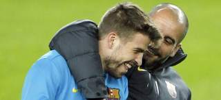
Gerard Piqué vuelve a sentirse importante el el FC Barcelona.
El central marcó un importantísimo gol ante el Mallorca para seguir dejando a su equipo a solo seis puntos del Real Madrid en Liga. Además, se le ve más centrado que hace unas semanas, donde los despistes eran continuos.
Unas semanas que han sido las peores del central en su nueva etapa en el Barça. Pero el miércoles apunta a la titularidad -y a sentirse importante- ante el Milan. Un equipo al que no ha tenido la oportunidad de enfrentarse. Los culés jugaron ante el equipo italiano en la liguilla de grupos de la Champions, y Piqué se perdió los dos partidos. Uno, por lesión; el otro, por decisión de Guardiola.
Eran malos tiempos para Piqué. Perdió la confianza del técnico y se vio envuelto en varias polémicas, dentro y fuera del campo. Su expulsión ante el Sporting y la denuncia que pidieron los árbitros para el central fueron duros golpes para Piqué, que ya parecen superados.
Tras todo esto, el central vuelve a exhibir su mejor versión y la baja obligada de Abidal es un plus para que Piqué vuelva a ser importante en el once de Guardiola. Además, tendrá la dura tarea de frenar a su excompañero de equipo Ibrahimovic.
2012-03-27T06:03:26Z
José Mourinho: "No soy yo el responsable de no haber salido antes en rueda de prensa"
José Mourinho: "No soy yo el responsable de no haber salido antes en rueda de prensa"
20MINUTOS.ES
El entrenador portugués habló tras ocho días sin dar una rueda de prensa.
En los dos últimos partidos se había impuesto la 'ley del silencio' en el Madrid.
La decisión de no dar las últimas ruedas de prensas no ha sido suya, dice.
El luso, que salió con Khedira, abandonó precipitadamente la comparecencia.
El entrenador del Real Madrid, José Mourinho, ha comparecido en rueda de prensa antes del partido de la Champions ante el Apoel y ha asegurado que no ha salido él el que ha decidido no haber comparecido ante los medios tras los dos últimos partidos."No tengo que justificar nada, pero no soy yo el responsable de no haber salido en rueda de prensa", dijo el entrenador luso.El técnico portugués, con gesto muy serio, decidió no contestar a varias preguntas que hacían alusión a la imagen que está dando estos días el Real Madrid y se negó a responder a cuestiones no relacionadas directamente con la Liga de Campeones.Sobre el rival en los cuartos de final de la Champions, el Apoel de Nicosia, el luso dijo que tenía "mucho respeto" por el equipo chipriota, aunque no ha negado que el Real Madrid sea el favorito en la eliminatoria: "no podemos comparar ambos clubes ni el presupuesto que manejan".Acerca de Fabio Coentrao, que fue pillado fumando el día de su cumpleaños y silbado por el público del Santiago Bernabéu en el último partido ante la Real Sociedad, Mourinho dijo que el polivalente jugador portugués está ya cogiendo al forma pero reconoce que su año, pese a ser bueno, "podría ser mejor".En el partido en Chipre, Mourinho no podrá contar con Xabi Alonso, sancionado, y el técnico aseguro que Granero tiene opciones de ser titular, pero no quiso desvelar detalles sobre el once inicial que sacará en Nicosia.Contradice a ButragueñoCon estas declaraciones, el portugués contradice lo manifestado por Butragueño un día antes. "El silencio es una postura tomada por el cuadro técnico", aseguró el director de relaciones institucionales del Madrid.Abandona la rueda de prensaAdemás, el luso abandonó precipitadamente la rueda de prensa, a quién acompañó Khedira, que también estaba compareciendo.La pregunta de un periodista sobre si hablarán después del partido ante el APOEL no le gustó a Mourinho, que decidió irse precipitadamente junto al centrocampista.
20MINUTOS.ES
- El entrenador portugués habló tras ocho días sin dar una rueda de prensa.
- En los dos últimos partidos se había impuesto la 'ley del silencio' en el Madrid.
- La decisión de no dar las últimas ruedas de prensas no ha sido suya, dice.
- El luso, que salió con Khedira, abandonó precipitadamente la comparecencia.
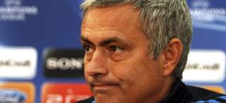
El entrenador del Real Madrid, José Mourinho, ha comparecido en rueda de prensa antes del partido de la Champions ante el Apoel y ha asegurado que no ha salido él el que ha decidido no haber comparecido ante los medios tras los dos últimos partidos.
"No tengo que justificar nada, pero no soy yo el responsable de no haber salido en rueda de prensa", dijo el entrenador luso.
El técnico portugués, con gesto muy serio, decidió no contestar a varias preguntas que hacían alusión a la imagen que está dando estos días el Real Madrid y se negó a responder a cuestiones no relacionadas directamente con la Liga de Campeones.
Sobre el rival en los cuartos de final de la Champions, el Apoel de Nicosia, el luso dijo que tenía "mucho respeto" por el equipo chipriota, aunque no ha negado que el Real Madrid sea el favorito en la eliminatoria: "no podemos comparar ambos clubes ni el presupuesto que manejan".
Acerca de Fabio Coentrao, que fue pillado fumando el día de su cumpleaños y silbado por el público del Santiago Bernabéu en el último partido ante la Real Sociedad, Mourinho dijo que el polivalente jugador portugués está ya cogiendo al forma pero reconoce que su año, pese a ser bueno, "podría ser mejor".
En el partido en Chipre, Mourinho no podrá contar con Xabi Alonso, sancionado, y el técnico aseguro que Granero tiene opciones de ser titular, pero no quiso desvelar detalles sobre el once inicial que sacará en Nicosia.
Contradice a Butragueño
Con estas declaraciones, el portugués contradice lo manifestado por Butragueño un día antes. "El silencio es una postura tomada por el cuadro técnico", aseguró el director de relaciones institucionales del Madrid.
Abandona la rueda de prensa
Además, el luso abandonó precipitadamente la rueda de prensa, a quién acompañó Khedira, que también estaba compareciendo.
La pregunta de un periodista sobre si hablarán después del partido ante el APOEL no le gustó a Mourinho, que decidió irse precipitadamente junto al centrocampista.
2012-03-27T05:31:43Z
Almagro elimina a Verdasco y pasa junto a Ferrer a los octavos del Masters 1.000 de Miami
Almagro elimina a Verdasco y pasa junto a Ferrer a los octavos del Masters 1.000 de Miami
AGENCIAS
El tenista murciano se impuso con comodidad al madrileño por 6-3 y 6-4.
Ferrer se impuso con muchas dificultades al francés Benneteau (7-6 y 6-4).
Ya son tres españoles (con Nadal) en entrar en octavos del Masters de Miami.
Albert Ramos cayó ante Richard Gasquet y se despide del torneo americano.
Andy Roddick da la sorpresa y elimina a Roger Federer; pasa Djokovic.
El tenista español Nicolás Almagro consiguió este lunes acceder a los octavos de final del torneo de Miami, tras derrotar al también español Fernando Verdasco (6-3, 6-4), mientras que Albert Ramos no pudo hacer lo propio y dijo adiós cediendo ante el francés Richard Gasquet (6-2, 5-7, 6-3).Almagro fue superior a un Verdasco que nunca se encontró a gusto sobre la pista de Miami. Ya en el sexto juego del primer set el murciano consiguió un 'break' que le ponía 4-2 y que propició el 6-3 final con el que se adjudicó la primera manga.El segundo parcial no supuso un cambio de aires para Verdasco, que perdió su saque en el tercer juego y volvió a jugar a remolque. Un 'break' que, al igual que en el primer set, volvió a ser definitivo y que utilizó Almagro para adjudicarse el partido por 6-4. El murciano accede así a los octavos de final de Miami donde se enfrentará al local Mardy Fish.Ferrer pasa rondaEl español David Ferrer alcanzó los octavos de final del torneo de tenis de Miami tras superar al francés Julien Benneteau por 7-6 (5) y 6-4. Ferrer, quinto cabeza de serie, necesitó de una hora y 37 minutos para superar la resistencia de su oponente galo, trigésimo favorito, con el que mantuvo un intenso suelo, especialmente en el primer set, resuelto a favor del español en el desempate. En la segunda manga David Ferrer logró romper el servicio de Benneteau en dos ocasiones, y aunque lo cedió en otra, pudo finalmente mantener la ventaja y llevarse el set y el partido. En octavos se enfrentará al vencedor del partido que disputarán el argentino Juan Martín Del Potro y el croata Marin Cilic.Ramos, fueraAlbert Ramos se despidió del torneo estadounidense tras caer ante el francés Richard Gasquet, en un encuentro que tuvo que decidirse en el tercer set. No comenzó de la mejor manera posible el tenista catalán que, tras ceder el primer set por 6-2, tuvo que remontar en el segundo. Una segunda manda que decidió un 'break' conseguido por Ramos cuando el encuentro iba 5-5. Con su saque no falló y con el 7-5 mandó el encuentro al tercer set.Sin embargo, de nuevo un mal comienzo lastró al español, ya que perdió su primer saque y propició que Gasquet se pusiera 3-0. Ese 'break' fue decisivo y por 6-3 el francés se adjudicó el encuentro, accediendo así a octavos de final, donde se verá las caras con el vencedor del Djokovic-Troicki.Roddick da la sorpresaEl estadounidense Andy Roddick protagonizó la sorpresa de la jornada al eliminar al suizo Roger Federer del torneo de tenis de Miami, segundo Master 1000 de la temporada. Roddick, trigésimo primer favorito, derrotó a Federer, tercer cabeza de serie, por 7-6 (4), 1-6 y 6-4 en dos horas de un partido lleno de incertidumbre y de alto nivel tenístico. También pasa de ronda Novak Djokovic, que apenas se ha desgastado para superar a su compatriota Viktor Troicki (6-3, 6-4).
AGENCIAS
- El tenista murciano se impuso con comodidad al madrileño por 6-3 y 6-4.
- Ferrer se impuso con muchas dificultades al francés Benneteau (7-6 y 6-4).
- Ya son tres españoles (con Nadal) en entrar en octavos del Masters de Miami.
- Albert Ramos cayó ante Richard Gasquet y se despide del torneo americano.
- Andy Roddick da la sorpresa y elimina a Roger Federer; pasa Djokovic.
El tenista español Nicolás Almagro consiguió este lunes acceder a los octavos de final del torneo de Miami, tras derrotar al también español Fernando Verdasco (6-3, 6-4), mientras que Albert Ramos no pudo hacer lo propio y dijo adiós cediendo ante el francés Richard Gasquet (6-2, 5-7, 6-3).
Almagro fue superior a un Verdasco que nunca se encontró a gusto sobre la pista de Miami. Ya en el sexto juego del primer set el murciano consiguió un 'break' que le ponía 4-2 y que propició el 6-3 final con el que se adjudicó la primera manga.
El segundo parcial no supuso un cambio de aires para Verdasco, que perdió su saque en el tercer juego y volvió a jugar a remolque. Un 'break' que, al igual que en el primer set, volvió a ser definitivo y que utilizó Almagro para adjudicarse el partido por 6-4. El murciano accede así a los octavos de final de Miami donde se enfrentará al local Mardy Fish.
Ferrer pasa ronda
El español David Ferrer alcanzó los octavos de final del torneo de tenis de Miami tras superar al francés Julien Benneteau por 7-6 (5) y 6-4.
Ferrer, quinto cabeza de serie, necesitó de una hora y 37 minutos para superar la resistencia de su oponente galo, trigésimo favorito, con el que mantuvo un intenso suelo, especialmente en el primer set, resuelto a favor del español en el desempate.
En la segunda manga David Ferrer logró romper el servicio de Benneteau en dos ocasiones, y aunque lo cedió en otra, pudo finalmente mantener la ventaja y llevarse el set y el partido.
En octavos se enfrentará al vencedor del partido que disputarán el argentino Juan Martín Del Potro y el croata Marin Cilic.
Ramos, fuera
Albert Ramos se despidió del torneo estadounidense tras caer ante el francés Richard Gasquet, en un encuentro que tuvo que decidirse en el tercer set. No comenzó de la mejor manera posible el tenista catalán que, tras ceder el primer set por 6-2, tuvo que remontar en el segundo. Una segunda manda que decidió un 'break' conseguido por Ramos cuando el encuentro iba 5-5. Con su saque no falló y con el 7-5 mandó el encuentro al tercer set.
Sin embargo, de nuevo un mal comienzo lastró al español, ya que perdió su primer saque y propició que Gasquet se pusiera 3-0. Ese 'break' fue decisivo y por 6-3 el francés se adjudicó el encuentro, accediendo así a octavos de final, donde se verá las caras con el vencedor del Djokovic-Troicki.
Roddick da la sorpresa
El estadounidense Andy Roddick protagonizó la sorpresa de la jornada al eliminar al suizo Roger Federer del torneo de tenis de Miami, segundo Master 1000 de la temporada.
Roddick, trigésimo primer favorito, derrotó a Federer, tercer cabeza de serie, por 7-6 (4), 1-6 y 6-4 en dos horas de un partido lleno de incertidumbre y de alto nivel tenístico.
También pasa de ronda Novak Djokovic, que apenas se ha desgastado para superar a su compatriota Viktor Troicki (6-3, 6-4).
2012-03-26T21:19:49Z
El Sevilla golea a un Granada que no mereció tanto castigo (0-3)
El Sevilla golea a un Granada que no mereció tanto castigo (0-3)
EFE
La pegada sevillista decidió un duelo más igualado de lo que dice el resultado.
Negredo y Del Moral fueron una pesadilla para la defensa del equipo de Abel.
Estadísticas del partido | Clasificación de la Liga.
El Sevilla consiguió su segunda victoria consecutiva como visitante tras ganar por 0-3 al Granada CF al aprovechar mejor sus opciones de gol y defenderse con mucho orden y acierto en la última media hora de encuentro.El equipo hispalense, que se coloca octavo empatado con Atlético de Madrid y Getafe a cuatro puntos de puestos europeos, marcó sus tantos en momentos clave por mediación de Negredo y Del Moral por partida doble, mientras que los nazaríes, que acumulan cuatro derrotas en las cinco últimas jornadas pero mantienen seis puntos de ventaja sobre el descenso, jugaron una buena primera parte pero se hundieron en la segunda.Los dos equipos, con onces titulares ofensivos sobre el campo, ofrecieron una muy buena primera parte, plagada de alternativas, ritmo, osadía y ocasiones, sobre todo en los frenéticos veinte minutos iniciales.Segundo doblNegredo, muy activo desde el principio, avisó de sus intenciones a los ocho minutos con un balón que superó a Roberto por alto y que sacó bajo la línea de gol Borja Gómez, poco antes de que el meta rojiblanco despejara de forma espectacular con una mano el disparo de Reyes a la escuadra de su meta.Palop no quiso ser menos en el otro área y, antes del cuarto de hora, evitó el gol de Uche al salir victorioso en el mano a mano, mientras que a los 17 minutos volvió a lucirse ante el nigeriano tras una gran contra llevada por Dani Benítez.Con el choque en plena ebullición, Mikel Rico desaprovechó el rechace de un córner con toda la portería a su favor (m.18), mientras Del Moral, justo a la media hora, falló dos claras ocasiones por rematar mal después de ganar la espalda a la defensa local.El frenesí dio pasos a minutos de sosiego para todos menos para Negredo, que arrancó en línea tras buen pase de Reyes, en la primera incursión del utrerano por el centro, y superó por alto en el uno contra uno a Roberto (0-1, m.40).El Granada, ofuscado por momentos con el arbitraje del asturiano Muñiz Fernández, quiso igualar la contienda antes del intermedio, mas los lanzamientos lejanos de Abel Gómez y de Dani Benítez se marcharon fuera por poco.El conjunto dirigido por Abel Resino rozó el gol en el arranque del segundo tiempo, primero con una clarísima opción de Uche, que no encontró ángulo para rematar a portería vacía, que acabó con un paradón de Palop a trallazo de Dani Benítez, y después con un cabezazo de Uche y un tiro de Henrique que casi entran.El Granada perdonó y lo pagó, ya que el Sevilla mató el choque la primera vez que llegó en la reanudación, con un buen movimiento y perfecto zurdazo de Del Moral, tras gran desmarque y pase de Negredo (0-2, m.54).Quedaba más de media hora por delante pero el choque se acabó ahí, ya que las posesiones de los locales, con poco fútbol por las bajas de Martins y Fran Rico junto al bajón de Abel Gómez en el segundo acto, se estrellaron una y otra vez contra la ordenada zaga sevillista.Pese a tener cuatro delanteros en el campo, tras la entrada de Ighalo y Geijo, el Granada no volvió a crear peligro ante la meta rival y fueron los visitantes los que pudieron ampliar su ventaja a la contra, pero Del Moral, Rakitic y Navas se toparon con Roberto, el propio Rakitic perdonó una clara opción y Negredo mandó su vaselina al larguero.Ya en el descuento, con el Granada volcado, Del Moral se benefició de un rechace de Roberto para firmar, a puerta vacía, su segundo tanto y rubricar el segundo triunfo seguido de los hispalenses fuera de casa tras el logrado el jueves en Santander.- Ficha técnica:0-Granada CF: Roberto, Nyom, Siqueira (Geijo, m.72), Íñigo López, Borja Gómez, Mikel Rico, Abel Gómez, Franco Jara (Ighalo, m.57), Dani Benítez, Henrique y Uche.3-Sevilla FC: Palop, Coke, Navarro (Luna, m.67), Fazio, Escudé, Medel, Trochowski, Navas, Reyes (Rakitic, m.63), Del Moral y Negredo (Kanouté, m.87).Goles: 0-1. m.40: Negredo. 0-2. m.54. Del Moral. 0-3. m.92. Del MoralÁrbitro: Muñiz Fernández (Colegio Asturiano). Mostró cartulina amarilla a los locales Borja Gómez, Dani Benítez, Franco Jara y Nyom; y a los visitantes Del Moral, Coke y Medel.Incidencias: Partido correspondiente a la trigésima jornada de Liga en Primera división disputado en Los Cármenes ante 22.500 espectadores, 250 de ellos seguidores visitantes. Lleno.
EFE
- La pegada sevillista decidió un duelo más igualado de lo que dice el resultado.
- Negredo y Del Moral fueron una pesadilla para la defensa del equipo de Abel.
- Estadísticas del partido | Clasificación de la Liga.
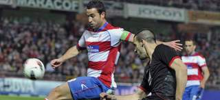
El Sevilla consiguió su segunda victoria consecutiva como visitante tras ganar por 0-3 al Granada CF al aprovechar mejor sus opciones de gol y defenderse con mucho orden y acierto en la última media hora de encuentro.
El equipo hispalense, que se coloca octavo empatado con Atlético de Madrid y Getafe a cuatro puntos de puestos europeos, marcó sus tantos en momentos clave por mediación de Negredo y Del Moral por partida doble, mientras que los nazaríes, que acumulan cuatro derrotas en las cinco últimas jornadas pero mantienen seis puntos de ventaja sobre el descenso, jugaron una buena primera parte pero se hundieron en la segunda.
Los dos equipos, con onces titulares ofensivos sobre el campo, ofrecieron una muy buena primera parte, plagada de alternativas, ritmo, osadía y ocasiones, sobre todo en los frenéticos veinte minutos iniciales.Segundo dobl
Negredo, muy activo desde el principio, avisó de sus intenciones a los ocho minutos con un balón que superó a Roberto por alto y que sacó bajo la línea de gol Borja Gómez, poco antes de que el meta rojiblanco despejara de forma espectacular con una mano el disparo de Reyes a la escuadra de su meta.
Palop no quiso ser menos en el otro área y, antes del cuarto de hora, evitó el gol de Uche al salir victorioso en el mano a mano, mientras que a los 17 minutos volvió a lucirse ante el nigeriano tras una gran contra llevada por Dani Benítez.
Con el choque en plena ebullición, Mikel Rico desaprovechó el rechace de un córner con toda la portería a su favor (m.18), mientras Del Moral, justo a la media hora, falló dos claras ocasiones por rematar mal después de ganar la espalda a la defensa local.
El frenesí dio pasos a minutos de sosiego para todos menos para Negredo, que arrancó en línea tras buen pase de Reyes, en la primera incursión del utrerano por el centro, y superó por alto en el uno contra uno a Roberto (0-1, m.40).
El Granada, ofuscado por momentos con el arbitraje del asturiano Muñiz Fernández, quiso igualar la contienda antes del intermedio, mas los lanzamientos lejanos de Abel Gómez y de Dani Benítez se marcharon fuera por poco.
El conjunto dirigido por Abel Resino rozó el gol en el arranque del segundo tiempo, primero con una clarísima opción de Uche, que no encontró ángulo para rematar a portería vacía, que acabó con un paradón de Palop a trallazo de Dani Benítez, y después con un cabezazo de Uche y un tiro de Henrique que casi entran.
El Granada perdonó y lo pagó, ya que el Sevilla mató el choque la primera vez que llegó en la reanudación, con un buen movimiento y perfecto zurdazo de Del Moral, tras gran desmarque y pase de Negredo (0-2, m.54).
Quedaba más de media hora por delante pero el choque se acabó ahí, ya que las posesiones de los locales, con poco fútbol por las bajas de Martins y Fran Rico junto al bajón de Abel Gómez en el segundo acto, se estrellaron una y otra vez contra la ordenada zaga sevillista.
Pese a tener cuatro delanteros en el campo, tras la entrada de Ighalo y Geijo, el Granada no volvió a crear peligro ante la meta rival y fueron los visitantes los que pudieron ampliar su ventaja a la contra, pero Del Moral, Rakitic y Navas se toparon con Roberto, el propio Rakitic perdonó una clara opción y Negredo mandó su vaselina al larguero.
Ya en el descuento, con el Granada volcado, Del Moral se benefició de un rechace de Roberto para firmar, a puerta vacía, su segundo tanto y rubricar el segundo triunfo seguido de los hispalenses fuera de casa tras el logrado el jueves en Santander.
- Ficha técnica:
0-Granada CF: Roberto, Nyom, Siqueira (Geijo, m.72), Íñigo López, Borja Gómez, Mikel Rico, Abel Gómez, Franco Jara (Ighalo, m.57), Dani Benítez, Henrique y Uche.
3-Sevilla FC: Palop, Coke, Navarro (Luna, m.67), Fazio, Escudé, Medel, Trochowski, Navas, Reyes (Rakitic, m.63), Del Moral y Negredo (Kanouté, m.87).
Goles: 0-1. m.40: Negredo. 0-2. m.54. Del Moral. 0-3. m.92. Del Moral
Árbitro: Muñiz Fernández (Colegio Asturiano). Mostró cartulina amarilla a los locales Borja Gómez, Dani Benítez, Franco Jara y Nyom; y a los visitantes Del Moral, Coke y Medel.
Incidencias: Partido correspondiente a la trigésima jornada de Liga en Primera división disputado en Los Cármenes ante 22.500 espectadores, 250 de ellos seguidores visitantes. Lleno.
2012-03-26T20:32:36Z
España acaricia su clasificación para el Mundial de fútbol sala
España acaricia su clasificación para el Mundial de fútbol sala
EFE
La selección española goleó sin muchas dificultades a Eslovaquia (0-4).
Si superan esta eliminatoria, España se clasifica para el Mundial de Tailandia.
Aicardo en dos ocasiones, Fernandao y Rafa Usín fueron los autores de los goles.
La selección española, actual campeona de Europa, de fútbol sala se ha quedado a un paso de clasificarse para el Mundial de Taiandia 2012 al golear (0-4) a la de Eslovaquia en Bratislava en el partido de ida de la eliminatoria de acceso.De esta manera, la selección nacional afrontará con una clara ventaja el encuentro de vuelta, que se jugará en el Palma Arena el próximo 10 de abril.Tras una primera parte en la que no hubo goles, pese a las numerosas ocasiones de que dispuso, España liquidó el partido en la segunda parte ante un compacto rival con tantos de Jesús Nazaret Aicardo (2), Fernandao y Rafa Usín.Aicardo, jugador del Lobelle, inauguró el marcador a los tres minutos de la reanudación al aprovechar una asistencia de Rafa Usín. El tanto despertó al hasta ese momento defensivo equipo eslovaco, que abrió líneas en busca de una igualada que nunca llegó, en buena medida gracias al portero Juanjo.Fernandao logró el 0-2 tras un disparo de Torras y rechace de Repar, y Rafa Usín y de nuevo Aicardo finiquitaron la goleada que permite a España llegar con una clara renta a Mallorca dentro de dos semanas.- Ficha Técnica0 - Eslovaquia: Rafaj; Rejzek; Mikita; Halko; Repa -cinco inicial-, Gasparovivc; Rick; Fehervari; Kozar; Kyjovsky; Serbin;Kujajdik.4 - España: Juanjo; Ortiz; Torras; Lozano y Fernandao -cinco inicial-, Álvaro; Aicardo; J. Ruiz; Fernandao; Lín; Miguelín y Rafa Usín,Goles: 0-1, m.17: Aicardo. 0-2, m.31: Fernandao. 0-3, m.33: Rafa Usín. 0-4, m.36: Aicardo.Arbitros: Bogdan Surescu (RUM) y Timo Onatsu (FIN).Incidencias: Encuentro de ida de la eliminatoria clasificatoria para el Mundial 2012 disputado en el Hant Arena Pasienky de Bratislava.
EFE
- La selección española goleó sin muchas dificultades a Eslovaquia (0-4).
- Si superan esta eliminatoria, España se clasifica para el Mundial de Tailandia.
- Aicardo en dos ocasiones, Fernandao y Rafa Usín fueron los autores de los goles.
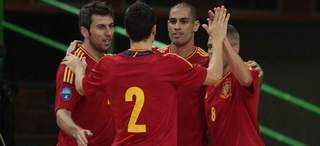
La selección española, actual campeona de Europa, de fútbol sala se ha quedado a un paso de clasificarse para el Mundial de Taiandia 2012 al golear (0-4) a la de Eslovaquia en Bratislava en el partido de ida de la eliminatoria de acceso.
De esta manera, la selección nacional afrontará con una clara ventaja el encuentro de vuelta, que se jugará en el Palma Arena el próximo 10 de abril.
Tras una primera parte en la que no hubo goles, pese a las numerosas ocasiones de que dispuso, España liquidó el partido en la segunda parte ante un compacto rival con tantos de Jesús Nazaret Aicardo (2), Fernandao y Rafa Usín.
Aicardo, jugador del Lobelle, inauguró el marcador a los tres minutos de la reanudación al aprovechar una asistencia de Rafa Usín. El tanto despertó al hasta ese momento defensivo equipo eslovaco, que abrió líneas en busca de una igualada que nunca llegó, en buena medida gracias al portero Juanjo.
Fernandao logró el 0-2 tras un disparo de Torras y rechace de Repar, y Rafa Usín y de nuevo Aicardo finiquitaron la goleada que permite a España llegar con una clara renta a Mallorca dentro de dos semanas.
- Ficha Técnica
0 - Eslovaquia: Rafaj; Rejzek; Mikita; Halko; Repa -cinco inicial-, Gasparovivc; Rick; Fehervari; Kozar; Kyjovsky; Serbin;Kujajdik.
4 - España: Juanjo; Ortiz; Torras; Lozano y Fernandao -cinco inicial-, Álvaro; Aicardo; J. Ruiz; Fernandao; Lín; Miguelín y Rafa Usín,
Goles: 0-1, m.17: Aicardo. 0-2, m.31: Fernandao. 0-3, m.33: Rafa Usín. 0-4, m.36: Aicardo.
Arbitros: Bogdan Surescu (RUM) y Timo Onatsu (FIN).
Incidencias: Encuentro de ida de la eliminatoria clasificatoria para el Mundial 2012 disputado en el Hant Arena Pasienky de Bratislava.
2012-03-26T18:11:29Z
Soldado: "Entendemos la actitud de la afición, las cosas no están saliendo como esperábamos"
Soldado: "Entendemos la actitud de la afición, las cosas no están saliendo como esperábamos"
EFE
Las dos derrotas consecutivas han hecho mucho daño al Valencia.
La tercera plaza del conjunto 'ché' en la Liga corre ahora serio peligro.
Manuel Llorente, presidente del club valenciano, acudió al entrenamiento matinal del equipo este lunes para "transmitir confianza" a sus jugadores.
Roberto Soldado, delantero centro del Valencia, aseguró que entiende "la actitud de la afición con el equipo" después de dos derrotas consecutivas frente a Zaragoza y Getafe en Liga que han permitido que el Málaga les empate a puntos en la lucha por el tercer puesto del campeonato."Sabemos que el malestar es de la afición y del vestuario, porque las cosas no están saliendo como esperamos. Entendemos la actitud de la afición, puesto que nosotros somos conscientes de que no estamos haciendo bien el trabajo", comentó el jugador durante la presentación de la 'Jornada Europea de Fútbol Profesional contra el Hambre'. "Ahora lo que hay que hacer es reaccionar y el primer paso lo tenemos el jueves en Europa. Esperamos que en esta semana, que es clave, saquemos los dos partidos frente al AZ Alkmaar en Europa League y frente al Levante en Liga, para dar la vuelta a esta situación que todos queremos que cambie", confesó. Soldado reconoció que en el entrenamiento matutino de este lunes estuvo presente el presidente del club, Manuel Llorente, para "transmitir confianza" al grupo. "Es verdad que estuvo el presidente pero lo que se habla en el vestuario no lo voy a decir. Nos transmitió confianza porque estamos terceros, luchamos por la Europa League y para que estemos tranquilos. Es un bajón y hay que reaccionar para que se nos alargue más", concluyó.
EFE
- Las dos derrotas consecutivas han hecho mucho daño al Valencia.
- La tercera plaza del conjunto 'ché' en la Liga corre ahora serio peligro.
- Manuel Llorente, presidente del club valenciano, acudió al entrenamiento matinal del equipo este lunes para "transmitir confianza" a sus jugadores.
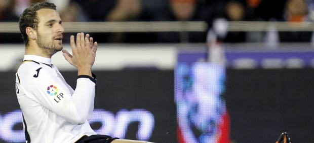
Roberto Soldado, delantero centro del Valencia, aseguró que entiende "la actitud de la afición con el equipo" después de dos derrotas consecutivas frente a Zaragoza y Getafe en Liga que han permitido que el Málaga les empate a puntos en la lucha por el tercer puesto del campeonato.
"Sabemos que el malestar es de la afición y del vestuario, porque las cosas no están saliendo como esperamos. Entendemos la actitud de la afición, puesto que nosotros somos conscientes de que no estamos haciendo bien el trabajo", comentó el jugador durante la presentación de la 'Jornada Europea de Fútbol Profesional contra el Hambre'.
"Ahora lo que hay que hacer es reaccionar y el primer paso lo tenemos el jueves en Europa. Esperamos que en esta semana, que es clave, saquemos los dos partidos frente al AZ Alkmaar en Europa League y frente al Levante en Liga, para dar la vuelta a esta situación que todos queremos que cambie", confesó.
Soldado reconoció que en el entrenamiento matutino de este lunes estuvo presente el presidente del club, Manuel Llorente, para "transmitir confianza" al grupo.
"Es verdad que estuvo el presidente pero lo que se habla en el vestuario no lo voy a decir. Nos transmitió confianza porque estamos terceros, luchamos por la Europa League y para que estemos tranquilos. Es un bajón y hay que reaccionar para que se nos alargue más", concluyó.
2012-03-26T15:43:36Z
La final de la Copa será a las 22.00 horas y el Athletic actuará como local por antigüedad
La final de la Copa será a las 22.00 horas y el Athletic actuará como local por antigüedad
EFE
El partido entre Athletic y Barça será el 25 de mayo en el Vicente Calderón.
Cada club tendrá 20.000 entradas cuyos precios oscilarán entre 60 y 250 euros.
El criterio de reparto de las localidades entre los socios los decide cada equipo.
La Federación Española de Fútbol (RFEF) confirmó que la final de la Copa del Rey, el 25 de mayo en el Vicente Calderón, empezará a las 22.00 horas y que el Athletic Club actuará como local, "por criterio de antigüedad", y el FC Barcelona como visitante.El precio de las entradas variará entre 60 y 250 euros, y, sobre un aforo de unas 50.000 localidades, cada club finalista se quedará con 20.000.El resto quedará a disposición de la RFEF, que indicó que como en años anteriores no se pondrán entradas a la venta y que los clubes serán los que definan el criterio para su reparto entre sus socios.Ambos equipos harán un entrenamiento oficial en el Vicente Calderón en la víspera de la final, que estará precedida de actuaciones musicales desde que se abran las puertas del estadio del Atlético de Madrid.En la reunión celebrada este lunes en la Ciudad del Fútbol, el Athletic estuvo representado por Jon Berasategui, director general, Amaia Iturbe, relaciones públicas, y Iosune Vegas, jefa de prensa, y el Barcelona por Antoni Rossich, director general, Emilio Sabadell, director de operaciones, y Xavier Boixeda, jefe de taquillaje.En nombre de la RFEF asistieron Jorge Pérez, secretario general, Antonio Suárez, presidente de la Comisión de Eventos, Esther Gascón, directora de Relaciones Externas, y Miguel Ángel López, coordinador de partidos.
EFE
- El partido entre Athletic y Barça será el 25 de mayo en el Vicente Calderón.
- Cada club tendrá 20.000 entradas cuyos precios oscilarán entre 60 y 250 euros.
- El criterio de reparto de las localidades entre los socios los decide cada equipo.
La Federación Española de Fútbol (RFEF) confirmó que la final de la Copa del Rey, el 25 de mayo en el Vicente Calderón, empezará a las 22.00 horas y que el Athletic Club actuará como local, "por criterio de antigüedad", y el FC Barcelona como visitante.
El precio de las entradas variará entre 60 y 250 euros, y, sobre un aforo de unas 50.000 localidades, cada club finalista se quedará con 20.000.
El resto quedará a disposición de la RFEF, que indicó que como en años anteriores no se pondrán entradas a la venta y que los clubes serán los que definan el criterio para su reparto entre sus socios.
Ambos equipos harán un entrenamiento oficial en el Vicente Calderón en la víspera de la final, que estará precedida de actuaciones musicales desde que se abran las puertas del estadio del Atlético de Madrid.
En la reunión celebrada este lunes en la Ciudad del Fútbol, el Athletic estuvo representado por Jon Berasategui, director general, Amaia Iturbe, relaciones públicas, y Iosune Vegas, jefa de prensa, y el Barcelona por Antoni Rossich, director general, Emilio Sabadell, director de operaciones, y Xavier Boixeda, jefe de taquillaje.
En nombre de la RFEF asistieron Jorge Pérez, secretario general, Antonio Suárez, presidente de la Comisión de Eventos, Esther Gascón, directora de Relaciones Externas, y Miguel Ángel López, coordinador de partidos.
2012-03-26T15:22:41Z
Muamba mejora y ve un resumen del partido del Bolton en la tele
Muamba mejora y ve un resumen del partido del Bolton en la tele
EFE
El jugador sigue en un hospital londinense y muestra síntomas de mejoría.
Vio por la tele un resumen del primer partido disputado por su equipo tras el paro cardíaco que sufrió hace nueve días en el choque de la FA Cup ante el Tottenham.
Su equipo ganó 2-1 al Blackburn y la afición dedicó un mosaico a Muamba.
El entrenador del Bolton, Owen Coyle, declaró que su jugador Fabrice Muamba, que hace nueve días sufrió un paro cardíaco durante un encuentro de la FA Cup en Inglaterra, vio un resumen del partido de la Premier que disputaron sus compañeros el sábado.Coyle aseguró que Muamba vio el resumen del encuentro, en el que el Bolton superó por 2-1 al Blackburn Rovers, en el programa 'Match of the Day' de la cadena británica BBC, "aunque el jugador se quedó dormido con el 2-0 en el marcador".El técnico confirmó también que una pequeña delegación del equipo visitará al futbolista de origen congoleño en el Chest Hospital de Londres antes de retomar el partido copero ante el Tottenham en White Hart que fue suspendido tras el colapso del jugador.El Bolton, tras observar síntomas de mejoría del futbolista, volvió a jugar por primera vez el sábado desde el incidente, que ocurrió el pasado 17 de febrero.Antes de iniciarse el encuentro, los hinchas del Bolton mostraron un mosaico que ocupaba la tribuna lateral del estadio en el que se podía leer "Muamba 6", en referencia al dorsal que luce el jugador en el equipo que entrena el escocés Owen Coyle.El técnico decidió que el equipo continuaría con sus compromisos ligueros después de hablar con los familiares del centrocampista, que dieron el visto bueno a que el equipo no pidiera a la Premier League que suspendiera el partido.Muamba cayó desplomado sobre el césped de White Hart Lane en el minuto 41 de la primera parte del partido contra el Tottenham y los médicos tardaron 78 minutos en lograr que su corazón volviera a latir, según explicó la pasada semana el médico del Bolton, Jonathan Tobin.
EFE
- El jugador sigue en un hospital londinense y muestra síntomas de mejoría.
- Vio por la tele un resumen del primer partido disputado por su equipo tras el paro cardíaco que sufrió hace nueve días en el choque de la FA Cup ante el Tottenham.
- Su equipo ganó 2-1 al Blackburn y la afición dedicó un mosaico a Muamba.
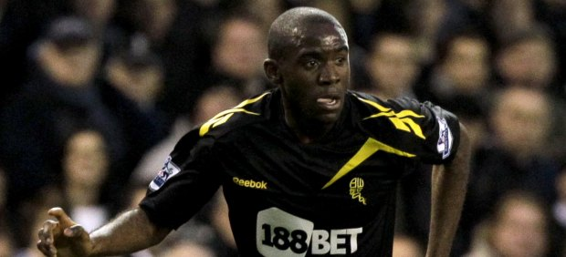
El entrenador del Bolton, Owen Coyle, declaró que su jugador Fabrice Muamba, que hace nueve días sufrió un paro cardíaco durante un encuentro de la FA Cup en Inglaterra, vio un resumen del partido de la Premier que disputaron sus compañeros el sábado.
Coyle aseguró que Muamba vio el resumen del encuentro, en el que el Bolton superó por 2-1 al Blackburn Rovers, en el programa 'Match of the Day' de la cadena británica BBC, "aunque el jugador se quedó dormido con el 2-0 en el marcador".
El técnico confirmó también que una pequeña delegación del equipo visitará al futbolista de origen congoleño en el Chest Hospital de Londres antes de retomar el partido copero ante el Tottenham en White Hart que fue suspendido tras el colapso del jugador.
El Bolton, tras observar síntomas de mejoría del futbolista, volvió a jugar por primera vez el sábado desde el incidente, que ocurrió el pasado 17 de febrero.
Antes de iniciarse el encuentro, los hinchas del Bolton mostraron un mosaico que ocupaba la tribuna lateral del estadio en el que se podía leer "Muamba 6", en referencia al dorsal que luce el jugador en el equipo que entrena el escocés Owen Coyle.
El técnico decidió que el equipo continuaría con sus compromisos ligueros después de hablar con los familiares del centrocampista, que dieron el visto bueno a que el equipo no pidiera a la Premier League que suspendiera el partido.
Muamba cayó desplomado sobre el césped de White Hart Lane en el minuto 41 de la primera parte del partido contra el Tottenham y los médicos tardaron 78 minutos en lograr que su corazón volviera a latir, según explicó la pasada semana el médico del Bolton, Jonathan Tobin.
2012-03-26T08:41:42Z
El Apoel no se rinde: "Ojalá se ruede una película deportiva entre David y Goliat"
El Apoel no se rinde: "Ojalá se ruede una película deportiva entre David y Goliat"
EFE
Es un modesto club con ocho millones de euros de presupuesto.
Se ha colado en los cuartos de final de la Champions.
Juega el martes ante el Madrid y saben de la superioridad de los blancos.
Sin embargo, desde el club de Nicosia anuncian batalla ante los de Mou.
El Apoel de Nicosia, un modesto club con ocho millones de euros de presupuesto que se ha colado en cuartos de la Liga de Campeones, es consciente de la superioridad futbolística del Real Madrid, pero no se resigna a su suerte y confía en sus posibilidades apoyado por su público. "Quiero jugar, queremos dar lo mejor de nosotros... es muy difícil describir los sentimientos de jugar contra el Real Madrid", declaró a Efe el delantero brasileño Aílton José Almeida, uno de los ídolos de la afición con el numero 8 a la espalda."Cuando el partido comience jugaremos once contra once", afirmó Aílton, de 28 años, y que lleva dos años en el club chipriota, sin mostrar temor ante el rival aunque admitió que es uno de los aristócratas del fútbol. "No sabemos lo que nos espera, pero soy optimista, vamos a ver lo que pasará", agregó Aíltona a quien los hinchas amarillos llaman "El Pektaras" (el jugadorazo). Mientras, con el número 9 a la espalda, el argentino Esteban Solari, define el encuentro como "histórico" y se muestra listo para la lucha. "Sin duda es un partido histórico para el Apoel, creo que no sólo por enfrentar al Real Madrid, sino por encontrarse en esta estancia de la Liga de Campeones, donde están los ocho mejores equipos de Europa", sostuvo el delantero rosarino de 31 años, que jugó en el Almería dos temporadas. Esta es la segunda etapa en Chipre de Solari, hermano del exmadridista Hernán, después de haber jugado entre 2005 y 2007 con el Apoel y probar fortuna en México y en España. Ya entonces, en una entrevista en 2007, confesó a Efe que el "Apoel tiene un futuro muy prometedor y creo que podría clasificarse para la Liga de Campeones o la UEFA". Cinco años mas tarde ese futuro ha llegado, el Apoel es el primer club de la isla mediterránea que llega tan lejos en la máxima competición europea de clubes. "Los partidos de la Champions son partidos especiales donde todos los jugadores juegan de manera diferente. Nosotros no perdemos la esperanza de hacer una buena eliminatoria y aunque tengamos un uno por ciento de posibilidad vamos a luchar por eso", agregó.Por otra parte, los directivos de Apoel comparten el mismo empuje de sus jugadores. "El equipo cree, nosotros creemos, hay voluntad y entusiasmo, y deseamos un buen resultado", declaró a Efe Fivos Erotocritou, el presidente del club. "Claro que entre un buen resultado y la clasificación hay una enorme diferencia. Lo mejor sería la victoria o un empate", opinó el responsable del club chipriota que agregó: "si juegas con un equipo como el Real y caes eliminado, te vas con orgullo y la cabeza alta". Según Erotocritou la gran temporada europea del Apoel se debe a la excelente plantilla y al gran trabajo del entrenador, el serbio Ivan Jovanic. Y en esta aventura en la que está inmerso el club, los hinchas amarillos no podían dejar de participar en un "nuevo viaje a las estrellas" y seguir soñando con nuevas hazañas. "Ojalá el martes se ruede una película deportiva entre David y Goliat, y esta vez se logre la victoria sin hondas y piedras, sino con una pelota" deseó Michalis, de 28 años, uno de los afortunados que logró una entrada en el estadio GSP con capacidad para menos de 23.000 espectadores, todas vendidas desde el jueves pasado. Por otra parte, Ruth Toribio, una madrileña de 31 años, declaró a Efe: "Sí, voy a asistir a ese momento mágico, así un día podré decir: yo estuve ahí".
EFE
- Es un modesto club con ocho millones de euros de presupuesto.
- Se ha colado en los cuartos de final de la Champions.
- Juega el martes ante el Madrid y saben de la superioridad de los blancos.
- Sin embargo, desde el club de Nicosia anuncian batalla ante los de Mou.
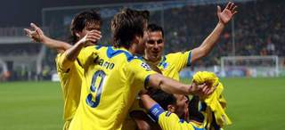
El Apoel de Nicosia, un modesto club con ocho millones de euros de presupuesto que se ha colado en cuartos de la Liga de Campeones, es consciente de la superioridad futbolística del Real Madrid, pero no se resigna a su suerte y confía en sus posibilidades apoyado por su público.
"Quiero jugar, queremos dar lo mejor de nosotros... es muy difícil describir los sentimientos de jugar contra el Real Madrid", declaró a Efe el delantero brasileño Aílton José Almeida, uno de los ídolos de la afición con el numero 8 a la espalda.
"Cuando el partido comience jugaremos once contra once", afirmó Aílton, de 28 años, y que lleva dos años en el club chipriota, sin mostrar temor ante el rival aunque admitió que es uno de los aristócratas del fútbol.
"No sabemos lo que nos espera, pero soy optimista, vamos a ver lo que pasará", agregó Aíltona a quien los hinchas amarillos llaman "El Pektaras" (el jugadorazo).
Mientras, con el número 9 a la espalda, el argentino Esteban Solari, define el encuentro como "histórico" y se muestra listo para la lucha.
"Sin duda es un partido histórico para el Apoel, creo que no sólo por enfrentar al Real Madrid, sino por encontrarse en esta estancia de la Liga de Campeones, donde están los ocho mejores equipos de Europa", sostuvo el delantero rosarino de 31 años, que jugó en el Almería dos temporadas.
Esta es la segunda etapa en Chipre de Solari, hermano del exmadridista Hernán, después de haber jugado entre 2005 y 2007 con el Apoel y probar fortuna en México y en España.
Ya entonces, en una entrevista en 2007, confesó a Efe que el "Apoel tiene un futuro muy prometedor y creo que podría clasificarse para la Liga de Campeones o la UEFA".
Cinco años mas tarde ese futuro ha llegado, el Apoel es el primer club de la isla mediterránea que llega tan lejos en la máxima competición europea de clubes.
"Los partidos de la Champions son partidos especiales donde todos los jugadores juegan de manera diferente. Nosotros no perdemos la esperanza de hacer una buena eliminatoria y aunque tengamos un uno por ciento de posibilidad vamos a luchar por eso", agregó.
Por otra parte, los directivos de Apoel comparten el mismo empuje de sus jugadores. "El equipo cree, nosotros creemos, hay voluntad y entusiasmo, y deseamos un buen resultado", declaró a Efe Fivos Erotocritou, el presidente del club.
"Claro que entre un buen resultado y la clasificación hay una enorme diferencia. Lo mejor sería la victoria o un empate", opinó el responsable del club chipriota que agregó: "si juegas con un equipo como el Real y caes eliminado, te vas con orgullo y la cabeza alta".
Según Erotocritou la gran temporada europea del Apoel se debe a la excelente plantilla y al gran trabajo del entrenador, el serbio Ivan Jovanic.
Y en esta aventura en la que está inmerso el club, los hinchas amarillos no podían dejar de participar en un "nuevo viaje a las estrellas" y seguir soñando con nuevas hazañas.
"Ojalá el martes se ruede una película deportiva entre David y Goliat, y esta vez se logre la victoria sin hondas y piedras, sino con una pelota" deseó Michalis, de 28 años, uno de los afortunados que logró una entrada en el estadio GSP con capacidad para menos de 23.000 espectadores, todas vendidas desde el jueves pasado.
Por otra parte, Ruth Toribio, una madrileña de 31 años, declaró a Efe: "Sí, voy a asistir a ese momento mágico, así un día podré decir: yo estuve ahí".
2012-03-26T07:38:12Z
Muchas luces... y alguna sombra en este inicio de Mundial
Muchas luces... y alguna sombra en este inicio de Mundial
20MINUTOS.ES / AGENCIAS
Sorpresas tanto para bien como para mal en las dos primeras carreras.
Fernando Alonso lidera el Mundial y McLaren da muy buenas sensaciones.
En el otro lado está Red Bull, con un mal arranque del actual campeón.
Inesperado inicio de Mundial en la Fórmula 1.El dominio de los últimos años de Red Bull no esta siendo tal en esta temporada, al menos en las dos primeras carreras del año, donde McLaren se ha mostrado más fiable que la escudería energética.Y nombres como los de Vettel o Webber son noticia, pero por sus discretos puestos más que que por sus logros deportivos. En cambio, sí saltan nombres en la sombra otros años. Ejemplos son el de Alonso o la revelación 'Checo' Pérez.Tras dos carreras, la clasificación general la comanda el asturiano, seguido de los dos McLaren (Hamilton y Button). Luego aparece el mexicano, en la quinta posición justo entre los dos Red Bull (Webber es cuarto y Vettel, actual campeón del mundo, sexto).Al acabar el GP de Malasia, los pilotos mostraban sus impresiones.Fernando Alonso calificó como "increíble" su triunfo que le permite ponerse líder del Mundial de Fórmula 1 aunque advirtió de la necesidad de seguir mejorando el 'F2012' y lograr que sea competitivo bajo cualquier circunstancia.La revelación, Checo Pérez, aseguró estar "muy contento" con su segunda plaza en el Gran Premio de Malasia y confía en seguir con su progresión para seguir luchando por la que sería su primera victoria en Fórmula 1.Otro que está contento es Lewis Hamilton, que este domingo concluyó en tercera posición, y que se mostró satisfecho con su podio en la segunda carrera de la temporada aunque le habría encantado "hacer más puntos".En la otra cara de la moneda está Sebastian Vettel, actual campeón del mundo. El alemán se mostró "muy contrariado" por el resultado final en Sepang, donde finalizó undécimo, después de sufrir diversos problemas en el coche y con Narain Karthikeyan, y reconoció que su carrera había sido "frustrante" por cómo había sucedido.Otro que sigue sin reaccionar es el compañero de Alonso en Ferrari Felipe Massa. Sus más que discretas actuaciones vuelven a colocarle en la picota.
20MINUTOS.ES / AGENCIAS
- Sorpresas tanto para bien como para mal en las dos primeras carreras.
- Fernando Alonso lidera el Mundial y McLaren da muy buenas sensaciones.
- En el otro lado está Red Bull, con un mal arranque del actual campeón.
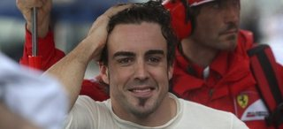
Inesperado inicio de Mundial en la Fórmula 1.
El dominio de los últimos años de Red Bull no esta siendo tal en esta temporada, al menos en las dos primeras carreras del año, donde McLaren se ha mostrado más fiable que la escudería energética.
Y nombres como los de Vettel o Webber son noticia, pero por sus discretos puestos más que que por sus logros deportivos. En cambio, sí saltan nombres en la sombra otros años. Ejemplos son el de Alonso o la revelación 'Checo' Pérez.
Tras dos carreras, la clasificación general la comanda el asturiano, seguido de los dos McLaren (Hamilton y Button). Luego aparece el mexicano, en la quinta posición justo entre los dos Red Bull (Webber es cuarto y Vettel, actual campeón del mundo, sexto).
Al acabar el GP de Malasia, los pilotos mostraban sus impresiones.
Fernando Alonso calificó como "increíble" su triunfo que le permite ponerse líder del Mundial de Fórmula 1 aunque advirtió de la necesidad de seguir mejorando el 'F2012' y lograr que sea competitivo bajo cualquier circunstancia.
La revelación, Checo Pérez, aseguró estar "muy contento" con su segunda plaza en el Gran Premio de Malasia y confía en seguir con su progresión para seguir luchando por la que sería su primera victoria en Fórmula 1.
Otro que está contento es Lewis Hamilton, que este domingo concluyó en tercera posición, y que se mostró satisfecho con su podio en la segunda carrera de la temporada aunque le habría encantado "hacer más puntos".
En la otra cara de la moneda está Sebastian Vettel, actual campeón del mundo. El alemán se mostró "muy contrariado" por el resultado final en Sepang, donde finalizó undécimo, después de sufrir diversos problemas en el coche y con Narain Karthikeyan, y reconoció que su carrera había sido "frustrante" por cómo había sucedido.
Otro que sigue sin reaccionar es el compañero de Alonso en Ferrari Felipe Massa. Sus más que discretas actuaciones vuelven a colocarle en la picota.
2012-03-26T06:17:39Z
Pau le gana el duelo personal a Marc, pero los Grizzlies asaltan el Staples Center
Pau le gana el duelo personal a Marc, pero los Grizzlies asaltan el Staples Center
EFE
Memphis derrota a los Lakers en su estadio por 96-102.
Pau consiguió un nuevo doble-doble de 16 puntos y 14 rebotes.
Buena labor de equipo de Marc al aportar ocho puntos y seis rebotes.
La eficacia y equilibrio volvió al ataque de los Grizzlies de Memphis y con el alero Rudy Gay de líder, que anotó 18 puntos, vencieron a domicilio por 96-102 a Los Ángeles Lakers. Gay encabezó una lista de siete jugadores, incluidos tres reservas que tuvieron dobles dígitos, y los Grizzlies (26-21), reivindicaron su mejor versión de equipo balanceado que les permitió conseguir la victoria y romper racha de tres derrotas consecutivas, en una gira de cuatro partidos, incluidos los dos que disputaron en el Staples Center, el primero, el pasado sábado, ante los Clippers y que perdieron por 101-85. Esta vez, el escolta O.J.Mayo surgió como el sexto jugador perfecto y decisivo al aportar 16 puntos, incluidos 12 en el cuarto periodo, que fue cuando los Grizzlies consiguieron la ventaja definitiva después que los Lakers se habían colocado a sólo tres tantos por detrás en el marcador (70-73) al concluir el tercer periodo. Los Lakers, que al descanso se fueron con una desventaja de 10 puntos (46-56), incrementada hasta 14 al inicio del tercer periodo, al final del mismo cuarto la diferencia era de solo tres tantos (70-73).Pero los Grizzlies rompieron el momento de los Lakers con la inspiración de Mayo, que protagonizó una racha de 11-2 después que los Lakers, con 9:40 minutos por jugarse, pusieron el parcial de 74-78. Primero el ala-pívot Zach Randolph anotó canasta para abrir la racha y Mayo se encargó de anotar los otros nueve consecutivos por tan sólo dos que lograron los Lakers. La aportación de Mayo fue decisiva porque rompió la defensa de los Lakers y a falta de 7:18 para el final del partido, los Grizzlies volvían a tener una ventaja cómoda de 13 puntos (76-89) que les ayudó a completar el tiempo y asegurarse la victoria. Junto a Rudy y Mayo, el base Mike Conley aportó 13 puntos y ocho asistencias, mientras que el escolta Tony Allen llegó a los 12 tantos y el ala-pívot Marreese Speights consiguió 10 anotaciones. Las mismas que tuvieron Randolph y el pívot iraní Hamed Haddadi, que se convirtió en el factor sorpresa a aportar los puntos que no dio el español Marc Gasol, que salió de titular, y fue el único que no logró dobles dígitos al concluir el partido con ocho puntos. Randolph, que salió de reserva, logró un doble-doble al capturar 12 rebotes y repartir tres asistencias, que lo dejaron como el jugador más completo de los Grizzlies después de disputar 28 minutos.Pau, más decisivo que Marc en ataqueMarc, por segundo partido consecutivo, no fue opción en el ataque de los Grizzlies, pero completó una buena labor de equipo al aportar ocho puntos y seis rebotes, que fueron todos defensivos, dio tres asistencias, recuperó dos balones y puso un tapón. El hermano mediano de los Gasol jugó 35 minutos que aprovechó para anotar 4 de 9 tiros de campo, incluido él último de los Grizzlies, que consiguió a falta de 67 segundos antes que sonase la bocina del final y permitió al equipo de Memphis un parcial de 91-102, imposible de remontar por los Lakers. Como equipo los Grizzlies tuvieron un 51 (44-86) por ciento de acierto en los tiros de campo, el 46 (6-13) de triples y el 80 (8-10) de personal, comparados al 43 (31-73), 39 (7-18) y 90 (27-30), respectivamente de los Lakers, que tampoco dominaron en el juego bajo los aros al quedarse con 38 rebotes por 42 del equipo de Memphis. El pívot Andrew Bynum anotó 30 puntos (11-16, 1-1, 7-9) y fue el líder encestador de los Lakers, pero no tuvo presencia bajo los aros, al capturar sólo cuatro rebotes, y volvió a tener problemas con el control del balón, al perderlo cuatro veces, de las 16 que registró el equipo. El escolta Kobe Bryant, que no tuvo un buen comienzo de partido, aportó 18 puntos, los mismos que logró el base Ramon Sessions, que esta vez no pudo ser factor ganador en la segunda salida que hizo como titular con su nuevo equipo. El ala-pívot español Pau Gasol consiguió un nuevo doble-doble de 16 puntos y 14 rebotes, pero no tuvo su mejor inspiración encestadora al fallar 11 de 15 tiros de campo. El mayor de los hermanos Gasol jugó 38 minutos, en los que anotó sólo cuatro tiros de campo, falló un intento de triple, y estuvo perfecto desde la línea de personal (8-8). El jugador de Sant Boi, que logró el trigésimo primer doble-doble de la temporada, también repartió tres asistencias, recuperó dos balones y puso un tapón. Ficha técnica: 96 - Los Ángeles Lakers (24+22+24+26): Sessions (18), Bryant (18), Bynum (30), Peace (5), Gasol (16) -cinco inicial-, Murphy (-), Barnes (6), Blake (3) y McRoberts (-). 102 - Memphis Grizzlies (28+28+17+29): Conley (13), Allen (12), Gasol (8), Gay (18), Speights (10) -cinco inicial-, Randolph (10), Pargo (5), Cunningham (-), Pondexter (-), Mayo (16) y Haddadi (10).
EFE
- Memphis derrota a los Lakers en su estadio por 96-102.
- Pau consiguió un nuevo doble-doble de 16 puntos y 14 rebotes.
- Buena labor de equipo de Marc al aportar ocho puntos y seis rebotes.
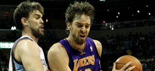
La eficacia y equilibrio volvió al ataque de los Grizzlies de Memphis y con el alero Rudy Gay de líder, que anotó 18 puntos, vencieron a domicilio por 96-102 a Los Ángeles Lakers.
Gay encabezó una lista de siete jugadores, incluidos tres reservas que tuvieron dobles dígitos, y los Grizzlies (26-21), reivindicaron su mejor versión de equipo balanceado que les permitió conseguir la victoria y romper racha de tres derrotas consecutivas, en una gira de cuatro partidos, incluidos los dos que disputaron en el Staples Center, el primero, el pasado sábado, ante los Clippers y que perdieron por 101-85.
Esta vez, el escolta O.J.Mayo surgió como el sexto jugador perfecto y decisivo al aportar 16 puntos, incluidos 12 en el cuarto periodo, que fue cuando los Grizzlies consiguieron la ventaja definitiva después que los Lakers se habían colocado a sólo tres tantos por detrás en el marcador (70-73) al concluir el tercer periodo.
Los Lakers, que al descanso se fueron con una desventaja de 10 puntos (46-56), incrementada hasta 14 al inicio del tercer periodo, al final del mismo cuarto la diferencia era de solo tres tantos (70-73).
Pero los Grizzlies rompieron el momento de los Lakers con la inspiración de Mayo, que protagonizó una racha de 11-2 después que los Lakers, con 9:40 minutos por jugarse, pusieron el parcial de 74-78.
Primero el ala-pívot Zach Randolph anotó canasta para abrir la racha y Mayo se encargó de anotar los otros nueve consecutivos por tan sólo dos que lograron los Lakers.
La aportación de Mayo fue decisiva porque rompió la defensa de los Lakers y a falta de 7:18 para el final del partido, los Grizzlies volvían a tener una ventaja cómoda de 13 puntos (76-89) que les ayudó a completar el tiempo y asegurarse la victoria.
Junto a Rudy y Mayo, el base Mike Conley aportó 13 puntos y ocho asistencias, mientras que el escolta Tony Allen llegó a los 12 tantos y el ala-pívot Marreese Speights consiguió 10 anotaciones.
Las mismas que tuvieron Randolph y el pívot iraní Hamed Haddadi, que se convirtió en el factor sorpresa a aportar los puntos que no dio el español Marc Gasol, que salió de titular, y fue el único que no logró dobles dígitos al concluir el partido con ocho puntos.
Randolph, que salió de reserva, logró un doble-doble al capturar 12 rebotes y repartir tres asistencias, que lo dejaron como el jugador más completo de los Grizzlies después de disputar 28 minutos.
Pau, más decisivo que Marc en ataque
Marc, por segundo partido consecutivo, no fue opción en el ataque de los Grizzlies, pero completó una buena labor de equipo al aportar ocho puntos y seis rebotes, que fueron todos defensivos, dio tres asistencias, recuperó dos balones y puso un tapón.
El hermano mediano de los Gasol jugó 35 minutos que aprovechó para anotar 4 de 9 tiros de campo, incluido él último de los Grizzlies, que consiguió a falta de 67 segundos antes que sonase la bocina del final y permitió al equipo de Memphis un parcial de 91-102, imposible de remontar por los Lakers.
Como equipo los Grizzlies tuvieron un 51 (44-86) por ciento de acierto en los tiros de campo, el 46 (6-13) de triples y el 80 (8-10) de personal, comparados al 43 (31-73), 39 (7-18) y 90 (27-30), respectivamente de los Lakers, que tampoco dominaron en el juego bajo los aros al quedarse con 38 rebotes por 42 del equipo de Memphis.
El pívot Andrew Bynum anotó 30 puntos (11-16, 1-1, 7-9) y fue el líder encestador de los Lakers, pero no tuvo presencia bajo los aros, al capturar sólo cuatro rebotes, y volvió a tener problemas con el control del balón, al perderlo cuatro veces, de las 16 que registró el equipo.
El escolta Kobe Bryant, que no tuvo un buen comienzo de partido, aportó 18 puntos, los mismos que logró el base Ramon Sessions, que esta vez no pudo ser factor ganador en la segunda salida que hizo como titular con su nuevo equipo.
El ala-pívot español Pau Gasol consiguió un nuevo doble-doble de 16 puntos y 14 rebotes, pero no tuvo su mejor inspiración encestadora al fallar 11 de 15 tiros de campo.
El mayor de los hermanos Gasol jugó 38 minutos, en los que anotó sólo cuatro tiros de campo, falló un intento de triple, y estuvo perfecto desde la línea de personal (8-8).
El jugador de Sant Boi, que logró el trigésimo primer doble-doble de la temporada, también repartió tres asistencias, recuperó dos balones y puso un tapón.
Ficha técnica:
96 - Los Ángeles Lakers (24+22+24+26): Sessions (18), Bryant (18), Bynum (30), Peace (5), Gasol (16) -cinco inicial-, Murphy (-), Barnes (6), Blake (3) y McRoberts (-).
102 - Memphis Grizzlies (28+28+17+29): Conley (13), Allen (12), Gasol (8), Gay (18), Speights (10) -cinco inicial-, Randolph (10), Pargo (5), Cunningham (-), Pondexter (-), Mayo (16) y Haddadi (10).